Nasıl oynanır
Eğitim
Oyunda yeni misin? Menüde Tek başına dene'nin yanındaki Eğitim'e dokun. Heron'da, kendi telefonunda, yaklaşık sekiz dakikalık kısa bir vardiya: İstasyon Mühendisisin, gemide başka kimse yok, belâ gelmez ve asla acıkmaz ya da yorulmazsın. Üst çubuğun altındaki bir koç her seferinde bir talimat verir, yürünecek karoyu bir okla işaretler, basılacak düğmeyi yakar ve yapınca ilerler. Eğitimi geç diyerek istediğin an çıkabilirsin.
- Joystick'le işaretli bir karoya yürü.
- Açmak için bir kapıya yürü ve odanın adını üst çubukta oku.
- El düğmesiyle bir eşyayı al, bırak, tekrar al ve çantana koy.
- Teçhizat'ı aç ve baretinin takılı olduğunu gör.
- Güç monitörünü oku: konsol, verisini yalnızca başında durduğun sürece gösterir.
- Sorunu konsolda bul: kırmızı gösterilen oda elektrikten kesiktir, sonra kemerindeki levyeyle ölü kapısını zorla aç.
- Kemerinden kablo makarasını al, tünelde kesilen yerin üstüne kablo ser ve ışıkların geri gelişini izle.
- Çatlak bir gövde duvarını onar: çantandan bir gövde plakası ve kemerinden kaynak makinesi, sonra Çatlağı yamala.
- Onardığın odanın hava alarmını oku.
- Makineden bir rasyon paketi al ve ye.
- Bir tabureye otur, sonra tekrar kalk.
- Bitirmek için Çık'a dokun; bir kart sırada ne deneyeceğini söyler (bir meslek ya da bir ekiple Vardiyaya katıl).
Vardiya
Herkes lobide buluşur ve bir meslek seçer. 4 kişi orada olunca kısa bir geri sayım başlar ve vardiya başlar: istasyonu çalışır tutmak için 25 dakika. Vardiya boyunca bela gelir: 2 olay ve her 3 kişi için bir tane daha; ilki 90 saniye sonra, son 3 dakikada hiçbiri. Süre dolunca ekip vardiyaya devam edip etmeyeceğine oy verir (aşağıda Vardiyanın sonu'na bak); sonra bir özet istasyonun nasıl olduğunu ve kimin ne yaptığını gösterir ve sonraki vardiya kısa bir aradan sonra başlar.
Geri sayımı beklemek mi istemiyorsun (90 saniye)? Bir meslek seçtikten sonra Hazır'a dokun; iptal etmek için yeniden dokun. Lobideki herkes hazır olunca vardiya onun yerine 5 saniyede başlar. Lobi, kaç kişinin hazır olduğunu gösterir, örneğin 3/5. Tek başına Dene'de beklenecek kimse yoktur: Şimdi başlat vardiyayı hemen başlatır ve bundan sonrası, bir kişilik ekiple de olsa, diğer her vardiyayla aynıdır. Zaten sürmekte olan bir vardiyaya gelen biri sadece bir meslek seçer ve katılır.
İstasyonun ihtiyaç duyduğu meslekler
Lobi hiçbir meslek kartını kendiliğinden işaretlemez. Vardiya sırasında İstasyon Şefi ya da Sicil Memuru, istasyonun ihtiyaç duyduğu meslekleri işaretleyebilir: kimlik konsolunda Öncelik olarak işaretle satırına dokun (geri almak için Öncelik işaretini kaldır'a dokun). Bir komuta kartı gerekir; üstünde ya da diğer elde olabilir.
İşaretli bir mesleğin kartında lobide "öncelikli" yazar. İşaretler vardiyaya geç katılanlara ve sonraki lobide gösterilir ve sonraki vardiya başlayınca silinir. Bir sonraki haritada çalışma yeri olmayan meslek işaretlenmez.
Gemideki İstasyon Mühendisleri
Elektrik santralinin parçaları, gemideki İstasyon Mühendisi sayısı arttıkça daha sık yıpranır: hiç yokken olağanın 0,6 katı, biriyle 1, ikisiyle 1,3 ve üç ya da daha fazlasıyla 1,6. Bu, elektrik santralinin aşınması için ekip büyüklüğünün yerini alır; gövde ve borular daha büyük ekiple yine daha hızlı yıpranır.
Gemide hiç İstasyon Mühendisi yokken mühendislik kapıları herkese açılır: onlar için erişim denetimi kalkar, her haritada. Bir İstasyon Mühendisi vardiyaya katılır katılmaz mühendislik kartını yeniden ister.
Haritayı seçmek
Tek bir haritaya sabitlenmemiş bir sunucu Heron İstasyonu'nu, Millrace İstasyonu'nu ve Cairn İstasyonu'nu oynatır. Lobi beklerken her oyuncu harita düğmeleri sırasında istediği haritaya dokunur (oyu geri almak için tekrar dokun); lobi her haritanın oylarını ve hangisinin önde olduğunu gösterir. Vardiya başlarken en çok oy alan harita oynanır; beraberlikte ya da hiç oy yoksa en son oynanan harita (ilk vardiyadan önce Heron). Telefon sonra haritayı kendiliğinden yükler ve yerini ve mesleğini korur. Dene ve eğitimde harita oyu yoktur: Dene, giriş menüsünde seçilen haritada oynanır (Heron, Millrace ya da Cairn, hatırlanır) ve eğitim her zaman Heron'dadır.
Bir görevin yalnızca haritada onun için bir oda varsa bir iş yeri vardır. Birinin olmadığı bir haritada görevin kartı "İş yeri yok" der ve sunulmaz; onu seçmiş olan orada Tayfa olur ve oylama odası olan bir haritaya geçerse seçimini geri alır. Tayfa için her zaman bir yer vardır. Lobi her harita için üzerinde çalışma yeri olmayan meslekleri listeler.
Vardiyanın sonu
Vardiya süresi (25 dakika) dolunca vardiya bitmez: her telefonda 30 saniyelik bir oylama açılır, iki düğmeli büyük bir istem: Devam ve Bitir. Çevrimiçi herkes oy verir, canlılar ve ölüler; cevap vermeyenler sayılmaz ve herkes cevap verince oylama hemen kapanır. Bitir, Devam'dan fazla oy alırsa vardiya biter (bu istasyonda ekip değişim mekiğiyle); beraberlik ya da öndeki Devam 10 dakika ekler ve bitince oylama yine gelir. İnsanlar oy verirken ya da mekik çağrılınca yeni bir belâ gelmez.
Çağrı herkese duyurulur. Mekik 2 dakika sonra gelir ve Ana Hava Kilidi ve Yanaşma Kapısı'na yanaşır; o ana dek sürgülü kapısı açılır; orada 90 saniye bekler. İçeri yürü ve 16 kayışlı koltuktan birine otur (Otur düğmesi): hayattaki herkes oturunca 5 saniye sonra kalkar, yoksa süre dolunca. Sonra kapısı mühürlenir ve koltukta olmayan herkes, ölüler gibi, rıhtımda dışarıda kalır. Mekik, yolcuları koltuklarında, 3 dakika yol alır ve vardiya biter: özet kimin eve vardığını, kimin geride kaldığını ya da öldüğünü listeler ve tur kaydı oyları ve kimlerin kaçtığını tutar.
Geç katılma (#93): Hazır ve Şimdi başlat yalnızca lobide vardır. Vardiya başladıktan sonra gelen biri, meslek kartlarıyla birlikte "Vardiya sürüyor" yazısını ve bir Vardiyaya katıl düğmesini görür (her meslek her zaman açıktır). Değişim mekiğiyle gelirler: Ana Hava Kilidi ve Yanaşma Kapısı'nda kapısı açık yanaşmış görünür, koltuklarından birine kayışlı otururlar ve 10 saniye sonra yürüyüp çıkmaları için bırakılırlar; kapı 15 saniye daha açık kalır. Vardiya sonu oylaması açıkken ya da mekik çağrılmışken kimse katılamaz: sonraki vardiyayı bekler.
Tek başına dene, tek kişilik ekiple aynı vardiyadır: süre, olaylar, oylama, mekik ve özet aynıdır. Telefonunda, seçtiğin haritada çalışır ve başlamak için başkasını beklemez.
Oyun kuralları: hikâye rolleri ve rıza
Hikâye rolleri nadir, isteğe bağlı sahnelerdir: bir ekip üyesine, başkalarının çözmesi gereken sorunlar çıkaran birkaç hedefli özel bir rol önerilebilir. Sunucunun sahibi açana kadar kapalıdırlar ve her oyuncu kendi adına seçer.
Lobide iki anahtar var, ikisi de sen açana kadar kapalı: Bana bir hikâye rolü öner ve Başkalarının hikâyelerine dahil olabilirim. Seçimin gizlidir ve telefonunda hatırlanır.
Gemide 6 kişiden azken kimseye rol önerilmez; ondan sonra her 8 kişiye bir rol düşer. Eğitimde ve sorunsuz bir vardiyada rol yoktur. Sunucu vardiyanın 3. dakikasında, vardiyanın kendi tohumuyla bir kez çeker: maaş, rütbe ve oyun süresi çekilişi asla değiştirmez. İstasyon Şefi, Sicil Memuru, Nöbet Görevlisi, Avukat ve sonradan katılanlar asla çekilmez.
Teklif özel bir karttır: 60 saniye içinde Kabul et ya da Reddet. Reddetmenin cezası yoktur ve kart en fazla bir başka kişiye önerilir. Rolü olan herkes istediği an geri çekilebilir.
Bir hikâye yalnızca katılmayı seçen kişilere dokunur. Sunucu, seçmemiş birine karşı bir hikâye rolünün her zararını reddeder ve reddi kaydeder. Zarar bir sersemletme ya da kör etmedir, asla yaralama değil: bir kişiye en fazla 2, toplamda 4, aralarında 5 dakika. Kırmızı alarm bu sınırları kapatmaz.
Herkes vardiyanın kalanında her hikâyeden çıkmak için Hikâye kartında Yeter'e dokunabilir. Seni hedef seçmiş bir rol yalnızca hedefin artık müsait olmadığını öğrenir.
Herkes Hikâye kartından bir oyuncuyu taciz, kasıtlı bozgunculuk, oyalama ya da başka bir nedenle bildirebilir. Bildirimler sunucunun sahibi için vardiyanın kaydına gider.
Nöbet, hikâyeye göre değil İstasyon Yasası'na göre davranır: yasal bir tutuklama kimsenin rızasını gerektirmez ve hikâyenin sınırları ona uygulanmaz.
Vardiya sonunda özet bir Hikâye kartı ekler: kimin rolü vardı, her hedef nasıl gitti ve nasıl bitti. Bir hikâye vardiyayı asla bitirmez.
Kaçakçı, Örgütleyici ve Sahtekâr
Kaçakçı bir hikâye rolüdür: bir kaçakçı. Ötekilerden farksız görünen birkaç kasa gizlice işaretlenir. Kaçakçı onları durdukları yerden (haritada varsa Ambar Bölmesi ya da Maden Rıhtımı) gizli kartta adı yazılı odaya, bırakma noktasına çeker ya da arabayla götürür ve orada 15 saniye bırakır: sonra alınırlar. 3 tanesi oraya ulaşmalı; bir tane daha yedek olarak işaretlenir. Bundan kimse zarar görmez.
Nöbet (Nöbet ya da komuta kartı) yanındaki bir kasayı denetleyebilir (6 saniyelik bir iş): işaretli bir kasa kaçak mührünü gösterir, ötekiler düzenli çıkar. Bulunan mühür İstasyon Yasası'na göre delildir (kaçak mal); Kaçakçı o kasayı kaybetmiştir. Kasaya tutturulan bir Sipariş formu onun manifestosudur (4 saniye); Ambar mührü taşıyan form kasanın yalnızca ilk denetimi geçmesini sağlar. Bir kasaya dokunan herkes üzerinde parmak izi bırakır ve kameralar onu kimin taşıdığını görür.
Örgütleyici bir hikâye rolüdür: Taahhüt flamalı bir halk kışkırtıcısı. İstasyon Şefi, Sicil Memuru ve Nöbet dışında herkes flamanın yanında dururken Taahhüdü imzala'ya dokunabilir: ne yaptığını söyler, yakındakiler imzayı görür, liste okunabilir ve Adımı çıkar bunu her an geri alır. Örgütleyici flamadan bir Taahhüt listesi basar ve onu yeterli isimle (imzalayabilecek olanların yaklaşık yarısı, iki ile altı arası) zamanında (en çok 15 dakika) İstasyon Şefi ya da Sicil Memuru odasına ulaştırmalıdır: faksla gönderir ya da dolaba koyar. Taahhüdün sözleri sabittir; İstasyon Şefi yanıt verebilir ya da vermeyebilir ve iyi niyetle yapılan bir dilekçe asla suç değildir.
Sahtekâr bir hikâye rolüdür: denetim bürosuna sızmış biri. Silah kâğıttır. Sahtekâr bir büro masasında herkes gibi bir Talep ya da Rapor yazar, sonra Sahtesini yaz'a dokunup Gönderen satırına başka bir tayfanın adını yazar; o kişi hikâyeye katılmayı kabul etmiş olmalıdır. Sahte bir kâğıt masada Sahtekâr'ın parmak izini bırakır; eldiven iz bırakmaz.
Sahtekâr'ın ilk hedefi adı verilen bir kişiye karşı sahte bir suçlamadır: onunla ilgili Hırsızlık ya da Kaçak mal konulu sahte bir Rapor Nöbet Bürosu ya da Savunma Odası içinde durmalı ve kartın verdiği, istasyon malı olmayan Nöbet mührü çalıştığı odada durmalıdır. İkinci hedef, başka birinin Ambar mührü ya da İstasyon Şefi mührüyle onayladığı iki sahte Taleptir.
Avukat bir Raporu Çizebilir: bu kâğıda ve kayda yazılır ve çizilen sahte bir suçlama Sahtekâr'a o hedefi vardiya boyunca kaybettirir.
Alçak Gelgit ajanı bir hikâye rolüdür: rölenin yavaşlamasını isteyen rakip bir istasyondan gelen bir sabotajcı. Ajan yalnızca her tayfanın yapabildiği şeyleri kullanır: bir kablo keser, bir oda panosunu kapatır, bir vanayı kapatır ya da bir pompayı durdurur, bir robotu kapatır. Hiçbir şey duyurulmaz: İstasyon Mühendisi arızayı bir konsolda (güç monitörü, Hava Tesisi konsolu, tayfa monitörü ya da robot listesi) bulur ve ötekiler gibi onarır.
Kuralları sunucu tutar: 5. dakikadan önce arıza yok, aynı anda en çok 3 arıza, istasyonu karartacak kesik yok ve asla yangın, gövde yırtığı ya da öldürücü gaz yok. Eldiven yoksa her dokunuş parmak izi bırakır ve kameralar orada kimin durduğunu görür.
Alçak Gelgit ajanı, her biri 4 dakika ayakta kalan 3 arızayla ya da 20. dakikada ana batarya yüzde 40'ın altındayken kazanır. Son kart sonradan her arızayı adıyla sayar.
Yama taşıyıcı bir hikâye rolüdür: yama kartı olan bir kişi, yapay zekâ değil. Robotlarda kötü bir bellenim kayması başıboş geziyor ve taşıyıcı onu yayar: bir robotun yanında ya da robot üreticisi erişimdeyken yakınında duran bir robota yamayı yükler (8 saniye).
Kayan bir robot robot listesinde (Bilim İnsanı'nın konsolu ve robotun kendi menüsü) bellenim: kayıyor yazar ve kendi işinde yanılır, asla zarar vermez: bir sağlık robotu en yaralı hastayı atlar, bir elektrikçi robotu kesik kabloyu bırakır, bir inşaat robotu çatlağı geç kapatır, bir nöbet robotu aranmayan birini kelepçeleyebilir; kelepçeleri Nöbet çıkarır. Kimse yaralanmaz.
Kayan bir robotun yanındaki, elinde tornavida olan herkes onu yeniden yazabilir (20 saniye, Bilim İnsanı için yarısı). Kuralları sunucu tutar: 5. dakikadan önce yama yok, aynı anda en çok 2 robot kayar.
Yama taşıyıcı, yeniden yazılmadan 5 dakika süren bir kaymayla kazanır. Son kart sonradan her robotu adıyla sayar.
Buradaki hiçbir rol kimseye zarar vermez. Her hikâye rolü gibi bunlar da Geri çekil'e, Yeter'e dokunabilir ya da bildirilebilir; son kart her biri için kazandı, kaybetti ya da berabere der: Kaçakçı kasalar teslim edilip eli serbest kalırsa, Örgütleyici liste dosyalanırsa, Sahtekâr sahte bir suçlama geçerli kalırsa ya da iki sahte Talep onaylanırsa kazanır.
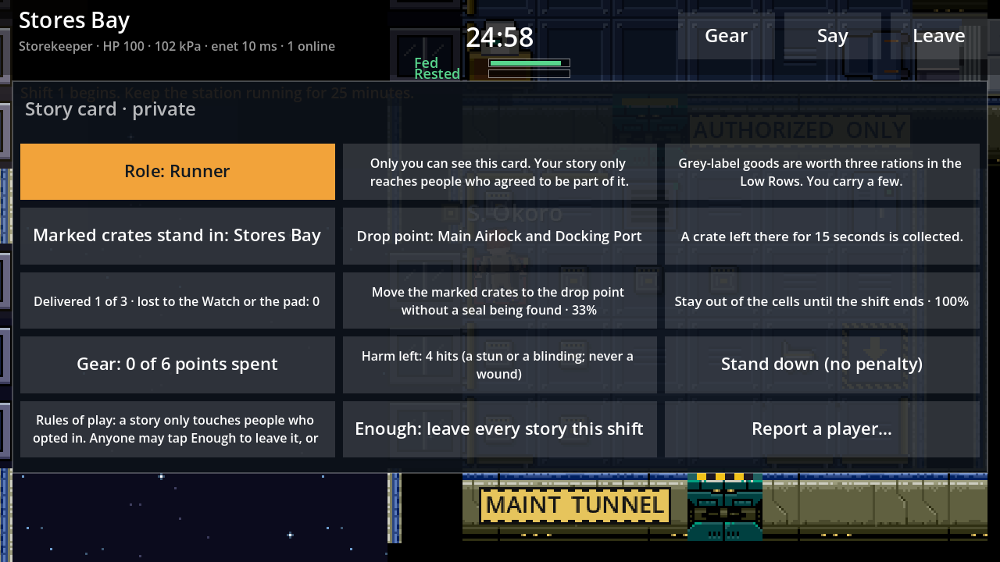
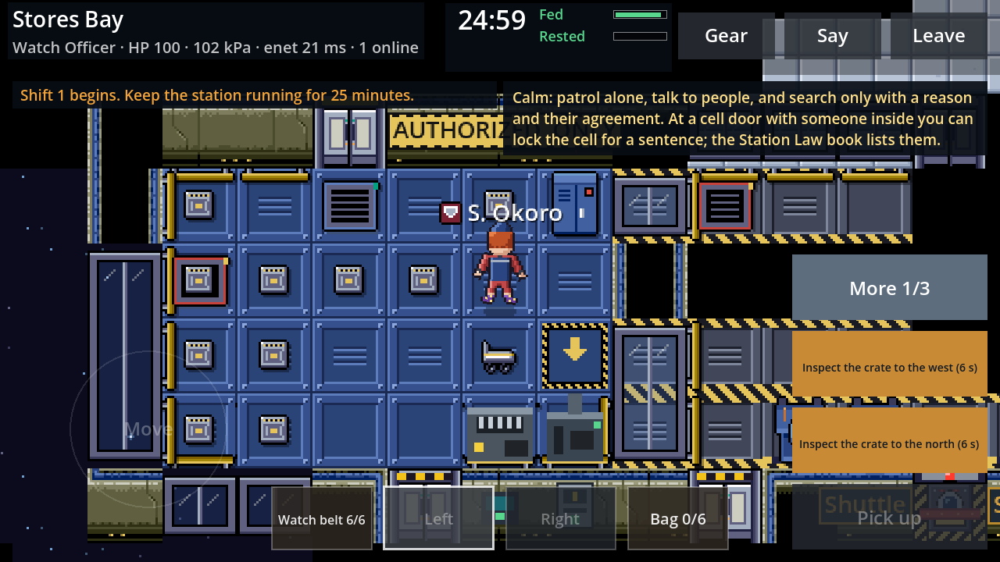

Üç hedef
- İstasyon sağlam: odaların en az yüzde 80 kadarında elektrik var ve ortalamada 80 kPa ya da daha fazla hava var.
- Kimse ölmez.
- Elektrik asla kesilmez. Dizileri, pil bankasını ve invertörleri çalışır tut: karanlık bir istasyon kaybedilmiş bir istasyondur.
Kontroller
- Hareket: sol başparmağını ekranın sol yarısında herhangi bir yere koy ve kaydır.
- Eylem: sağdaki turuncu düğmeler, elindekilerle burada neler yapabileceğini gösterir; en yararlısı en altta durur.
- Eller: altta iki tane; çerçeveli olan kullanımda olandır. Değiştirmek için diğerine dokun.
- Kemer: ellerin yanındaki Kemer düğmesi, taktığın kemerin taşıdıklarını listeler (alet kemeri: 8, tıp kemeri: 6, nöbet kemeri: 6, bakım görevlisi kemeri: 5, madenci kemeri: 6 ve tohum kesesi: 8). Kullanımdaki ele almak için bir eşyaya dokun ya da o elin tuttuğunu yerleştirmek için Koy'a dokun; kemere yalnızca kemerin yapıldığı şeyler girer. Kullanımdaki elde başka bir şey varsa, eşya boşsa öbür eline çıkar. Liste, dışına dokunana kadar açık kalır.
- Sırt çantası: ellerin yanındaki Çanta düğmesi içindekileri listeler (en çok 6 şey). Koymak hızlıdır; çıkarmak 1 sn sürer.
- Teçhizat, en üstte, giydiklerini ve tuttuklarını gösterir; klasik SS13'teki gibi her yuva için bir kutu vardır, ama ayakkabı yok (kimse giymiyor). Oradakini boş bir ele almak ya da kemeri, sırt çantasını, EVA kıyafetini, önlüğü ya da yeleği, EVA kaskını ya da Şef şapkasını, eldiveni, maskeyi, gözlüğü ya da kimlik kartını (önce birini yerden al) iki elden birine takmak için Kemer, Sırt, Kıyafet, Baş, Eldiven, Maske, Gözlük ya da Kimlik'e dokun; içindeki içinde kalır, düşerse de, ve kutu ne kadar dolu olduğunu söyler. Cep 1 ve Cep 2 ile, bir kıyafet giyiliyken Kıyafet deposu, kemer yuvası gibi kullanımdaki elle yer değiştirir. Kullanmak için bir ele dokun. Bir şey değiştirirken panel açık kalır; ellerin, Kemer ve Çanta düğmeleri altında hâlâ elinin altında durur; kapatmak için başka bir yere dokun.
- Kıyafet sensörleri: ekip monitörünün revirde senden ne gösterdiğini ayarlamak için Teçhizat'ta Üniforma'ya dokun: kapalı, canlı ya da ölü, yaşam belirtileri, yaşam belirtileri ve konum. Kıyafetler "canlı ya da ölü" ile başlar; Doktorlar daha fazlasını isteyecektir.
- Konuş: mesleğine ve odana göre hazır cümleler ya da klavye. Yakın, 9 kare çevredeki insanlara; Telsiz, istasyondaki herkese ulaşır.
- Sağ üstteki sarı çizgi, şu an en çok neyin işe yarayacağını söyler.
- Mac'te: oklar ya da WASD hareket ettirir, Boşluk ya da E eylem yapar, 1-4 bir eylem seçer, Q elleri değiştirir, Z/X/C/V kemer yuvaları 1-4'ü kullanır, N kemeri, B sırt çantasını, G Teçhizat'ı açar.
Hava ve sağlık
- Normal hava 101 kPa'dır. 50 kPa'nın altında soluyacak hava yoktur: EVA kıyafetinin deposunda bir hava tüpü yoksa saniyede 6 can gider (nefes aldıkça tüp boşalır).
- 20 kPa'nın altında beden ayrıca ezilir: EVA kıyafeti ve kaskı birlikte giymediysen saniyede 8 can daha gider.
- 50 kPa altında nefes alacak kadar hava yok. Bir hava tüpü akciğerlerini yalnızca giyilmiş bir EVA giysisinin deposunda (Teçhizat'ta Giysi deposu) korur: elde, ceple, kemerde ya da sırt çantanda olan hiçbir şey vermez. Nefes aldıkça boşalır.
- 20 kPa altında beden ayrıca ezilir. Bunu yalnızca tam EVA teçhizatı durdurur: ikisi de giyilmiş bir EVA giysisi ve bir EVA kaskı. İçlerinde mühürlüyken, kıyafetin deposunda bir hava tankı olduğu sürece vakumda hasar almazsın; tanksız mühürlüysen yine boğulursun ve kıyafetsiz ve kasksız bir tank seni ezilmeden kurtarmaz.
- Bir EVA giysisinin deposu bir hava tüpü alır: tüpü tut ve giysi deposuna tak. İki cep birer küçük şey alır: hava tankı, hava tankı (3/4), hava tankı (1/2), hava tankı (1/4), hava tankı (boş), tel kesici, tornavida, çok amaçlı alet, t-ışını tarayıcısı, ambar mührü, sipariş formu, İstasyon Şefi mührü, Sicil Memuru mührü, nöbet mührü, hukuk mührü, tıp mührü, bilim mührü, mühürlü form, nezle ilacı, buğday tohumu, domates tohumu, fasulye tohumu, rasyon paketi, patates tohumu, pirinç tohumu, mısır tohumu, havuç tohumu, soğan tohumu, elma çekirdeği, mantar sporu, pancar tohumu, sağlık analizörü, el feneri, mum, kilitleme etiketi, kalınlık ölçer, kalem, bandaj, yanık merhemi, antitoksin hapı, epinefrin kalemi, morfin şırıngası, grip antiviral ilacı, antibiyotik hapı ve biber gazı. Bir çanta, bir plaka, bir kemer ya da bir kimlik kartı cebe sığmaz.
- Her odanın havası dört gazdan yapılır: O2, N2, CO2 ve bir tehlike, kor gazı (zehirlidir ve bir gün yanacak), tek bir sıcaklıkta. Gaz açık kapılardan ve deliklerden hava ile hareket eder: sızdıran bir oda karışımını da götürür, hava kazanan bir komşu gazlarını da kazanır.
- İnsanlar O2 alır, CO2 verir. Elektriği olan bir oda CO2'yi ve kor gazını çeken bir temizleyici ve taze hava üfleyen havalandırmalar çalıştırır; elektriksiz oda yapamaz, bu yüzden CO2'si yavaşça birikir (kimsenin temizlemediği küçük bir odada yaklaşık on dakikada yüzde 3'e).
- Her odada bir hava alarmı vardır, duvarda küçük bir kutu. Basıncı, sıcaklığı, her gazı bir çubuk olarak ve havanın durumunu okumak için ona dokun: OK, WARN ya da DANGER. WARN 80 kPa altında ya da 125 üstünde, O2 %16 altında, CO2 %3 üstünde, kor gazı %0,5 üstünde, 320 K üstünde ya da 270 K altındadır; DANGER 60 kPa altında ya da 140 üstünde, O2 %10 altında, CO2 %8 üstünde, kor gazı %3 üstünde, 360 K üstünde ya da 250 K altındadır. Bir durum hemen yükselir ve yalnızca 20 saniye daha iyi havadan sonra iner, böylece titremez.
- Herkes bir alarmı okuyabilir. Kipleri bir istasyon mühendisi içindir (kimlik kartında mekanik erişim vardır): Normal, Temizle, Panik, Doldur, Devir ve Kapalı. Normal odayı 101 kPa'da tutar ve CO2 ile kor gazını temizler; Temizle sert temizler; Panik tüm havayı çeker ve havalandırmaları kapatır; Doldur taze hava boşaltır; Devir, oda neredeyse boşalana (10 kPa altı) dek Panik'tir ve sonra Normal'dir, havayı değiştirme yolumuz; Kapalı hiçbir şey yapmaz. Kimsenin tutmadığı bir Panik, neredeyse boş bir odada 60 saniye sonra Normal'e döner.
- Duvarında deliği olan bir oda, delik yamalanana dek alarmı tarafından Panik'te tutulur: havalandırmaları kapalı kalır, durumu TEHLİKE'dir ve kimse kipini değiştiremez. Basınç kilidi kapıları eskisi gibi kapatır.
- Hava Tesisi'ndeki atmos konsolu alarmı olan her odayı, en kötüsü başta, listeler (kırmızı DANGER, kehribar WARN, yeşil OK, elektriksiz olanlar gri) ve neyin yanlış olduğunu yazar. Kartını görmek için bir odaya dokun. Herhangi bir mühendis konsoldan bir odaya Panik ya da Normal gönderebilir ve bir kerede "Tüm kırmızı odalara Panik" (10 saniye bekler); Temizle ya da Doldur gibi daha ince her şey odanın alarmında bizzat yapılır. Telsizden hiçbir şey çıkmaz: istasyonun söylemesinin tek yolu alarmlar ve konsoldur.
- Heron'un havası borulardan gelir. Atmosfer'de dört tank (O2, N2, bir CO2 deposu ve bir kor gazı deposu), bir karıştırıcı, bir atık işleyici ve bir yakıcı iki hattı besler: karıştırıcının O2 ve N2 tanklarından doldurduğu (O2 payı bir ön ayardır: yüzde 21, yüzde 18, yüzde 25 ya da yüzde 30) ve her odada bir havalandırmayla biten besleme hattı ve her odanın temizleyicisinin doldurduğu, atık işleyicinin CO2 ve kor gazı depolarına boşalttığı atık hattı (yakıcı kor gazı deposunu yakar). Bir odanın hava alarmı kendi havalandırmalarını ve temizleyicilerini çalıştırır: Normal ve Temizle doldurur ve temizler, Panik odayı atık hattına çeker ve havalandırmaları kapatır, Doldur havalandırmaları sonuna dek açar, Kapalı durdurur. Havalandırması olmayan bir oda eski dolumu korur. Kestrel'de boru yok.
- Oda gazın sırasına göre dizilmiştir: dört tank kuzey duvarı boyunca bir sıra durur (atık çifti kapının batısında, besleme çifti doğusunda; her birinin üstündeki renk bandı gazı gösterir: O2 mavi-beyaz, N2 gri, CO2 ve kor gazı kahverengi), karıştırıcı, pompa ve vana besleme hattını batı kapısına dek izler, filtre, işlemci ve brülör atık hattını ondan izler, konsol, eski tank doldurucu, manifold ve tüp girişi kuzey kapısının yanında durur. Boş ellerle bunlardan birine dokun (bir tank, karıştırıcı, atık işlemcisi, brülör, bir pompa, bir vana, bir filtre, doldurucu, manifold, tüp girişi, konsol): kısa bir liste ne olduğunu, bir tankın seviyesini, neye bağlı olduğunu ve bir mühendisin onunla ne yaptığını söyler; makinenin kendi düğmeleri altındadır.
- Tesis kurulmuştur; sen onarırsın, şebekeyi sen döşemezsin. Servis geçitlerindeki ve Hava Tesisi'ndeki borular açıktır: İngiliz anahtarı (3 saniye) birini gevşetir ya da sıkar, tel kesici (2 saniye) keser. Gevşek bir boru hattın tuttuğunu içinde durduğu odaya sızdırır (odanın hava alarmı bildirir, gevşek bir atık borusu havayı çeker); kesik bir boru bir boşluk bırakır ve hattı orada böler. Koridor ve bölüm zemin karolarının altındaki borular, levye karoyu kaldırana dek gizlidir ve T-ışını tarayıcısında yeşil görünür. Bir İstasyon Mühendisi boşluğu tornadan bir boruyla doldurur (Boru döşe, 4 saniye) ve bozuk bir havalandırmayı, temizleyiciyi, pompayı ya da valfi (kırmızı bir çarpı taşır) kitiyle onarır.
- Atmos konsolunun Şebeke sekmesi dört tankı, besleme ve atık basıncını, karıştırıcıyı, her pompayı (kapalı, düşük, orta, yüksek), vanayı (açık, kapalı) ve filtreyi (hattan çektiği gaz) tek dokunuşla listeler; sızıntıları ve bozuk makineleri karo değil oda olarak gösterir: boruyu T-ışını tarayıcısıyla ara. Bir mühendis yanına bir makine de koyabilir. Telsizde ya da HUD'da hiçbir şey duyurulmaz.
- Arada sırada tesis yıpranır: bir kor sızıntısı bir havalandırmadan odasına 4 dakika kor gazı verir (odanın alarmı birikirken uyarır; Temizle ya da Kapalı en kötüsünü durdurur), bir boru gevşer, bir pompa, valf, havalandırma ya da temizleyici bozulur. Yavaştır, asla ani değildir ve asla duyurulmaz.
- Atmosfer'de tüp şarj manifoldu eski el doldurucunun yanında durur. Bir İngiliz anahtarı (3 saniye) hortumunu tesisin besleme hattına bağlar ya da çıkarır. Hortum takılıyken Takılı tankı doldur, Eldeki tankı doldur ya da İki tankı da doldur'a dokun (5 saniye): tanklar dolar ve hava, tesisin O2 ve N2 depolarından, karıştırıcının O2 payıyla gelir (boş bir tank için yaklaşık 400 mol, yarı dolu için daha az). Odanın elektriğine ve canlı bir besleme hattına ihtiyaç duyar ve bir depo boşalınca durur; el doldurucu yedek olarak kalır ve hiçbir şey almaz.
- Depolar tükenir: tesis bütün vardiya boyunca onlardan nefes alır ve sakin bir Heron'da N2 deposu yaklaşık on dört dakika sonra boştur. Ambar O2 ve N2 tüpleri satar (her biri 10 puan). Birini Atmosfer'deki gaz tüpü portuna, öbür elinde bir İngiliz anahtarıyla taşı ve Tüpü porta sık'a dokun (4 saniye): 20 saniyede deposuna 30000 mol boşaltır. Boş tüp limanın yanında durur: onu teslimat padine geri koy ve 2 puana Gönder.
- İnşaat Atölyesi'nde hurda presi bozuk bir parçayı alır: bir değişimin bıraktığı ölü pil hücresini ya da bozuk invertör modülünü, kirişten indirilen çatlak güneş panelini, yedek bir boru parçasını. Tut ve Pres'e dokun (6 saniye): torna onun için aldığı plakaların yarısı presin yanına çıkar (bir hücre ya da modül 1, bir panel 2, bir boru 1). Odanın elektriğine ihtiyaç duyar.
- Yanındaki gövde etüt panosu dış duvarları karo değil oda olarak listeler: kaçının yıpranmış, çatlak ya da yırtık olduğunu. Herhangi bir mühendisin kartı onu okur. Nereye bakacağını söyler; kalınlık ölçer, leke ve sis hangi duvar olduğunu gösterir.
- Eldivenler, maske ve gözlük Teçhizat'ta takılır (Eldiven, Maske, Gözlük): eşyayı tut ve yuvasına dokun, çıkarıp boş bir ele almak için yine dokun. Yalıtımlı eldivenler, ucuz eldivenler (ve dönüştükleri yırtık eldivenler), lateks eldivenler, steril bir maske ve kaynak gözlüğü eldeki her şeydir. Ölüler onları bırakır. Seni görebilen herkes onları sprite'ında görür, alet kemerin ya da tıbbi kemerinle birlikte: belde keseli bir kemer çizgisi, ellerde renkli eldivenler, alt yüzde maske ve gözlerde gözlük.
- Elektrik çarpması: bir kaynağın beslediği kabloyu kesmek ya da elektrikli bir kapının teli kesmek ya da nabızlamak, yalıtımlı eldiveni olmayan herkesi 20 hasarla çarpar ve kollarını 2 saniye uyuşturur: adım yok, iş yok ve bir not nedenini söyler. İstasyon Mühendisi yalıtımlı eldivenle başlar; eldiven bütün vardiya dayanır. Ucuz eldivenler BİR çarpmayı esirger ve onunla yırtık eldivene dönüşür, o hiçbirini esirgemez. Bir teli onarmak, kablo döşemek ve inşa etmek eldiven gerektirmez. Yalıtımlı eldiven olmadan bir şalter atmak ark çaktırır (35 hasar, 4 saniye sersemleme) ve trafonun çekirdeğinde o canlıyken çalışmak daha kötüdür (65 hasar).
- Kaynak: gövdeyi kesip açmak ve bir yırtığın üstüne plaka kaynaklamak, kaynak gözlüğü takmayan kaynakçının gözlerini yakar (EVA kaskının siperliği de korur). Görüş kenarlardan daralır ve kararır, vardiya sonuna dek; yalnızca göz ameliyatı iyileştirirdi ve istasyonda henüz ameliyat masası yok. İstasyon Mühendisi gözlükle başlar.
- Doktorlar: birini tedavi etmek ya da canlandırmak ondan bir hastalık kapma riski taşır, hasta hastayken doktorun takmadığı lateks eldiven ve steril maskenin her biri için yüzde 40, hasta sağlıklıyken yüzde 8. Doktor ikisiyle de başlar; yedekleri Revir'in dolabındadır.
- Işık: bir el feneri (5 karo) ve bir mum (2 karo), Işığı aç / Işığı kapat ya da Mumu yak / Mumu söndür ile açıp kapadığın ışıklardır. Yanan biri onu gören herkese çevresinde bir parıltı gösterir. Elektriksiz bir oda ya da tünel karanlık çizilir; bir ışığın erişimindeki (ve görüş hattındaki: bir duvar ışığı durdurur) karolar karanlıktan çıkarılır ve okunur kalır. Bir el feneri elde ya da cepte kıskaçlıyken parlar; bir mum (cepte sönük) bırakıldığı her yerde (zemin, masa, raf) yanmaya devam eder. İkisi de yanıp bitmez. Işık yalnızca senin gördüğün şeydir: başkalarının görüşünü değiştirmez ve yanık bir ışığı onu göremeyen kimseye söylemez.
- Yangın söndürücü: Püskürt önünde herkesin gördüğü kısa zararsız bir sis çıkarır. Henüz hiçbir şeyi söndürmez: yangınlar atmosferin sonraki aşamasıyla gelir.
- Bakım tünelleri: her cepte bir ile üç raf, dolap ve içlerinde farklı şeyler olan depo sandığı vardır (el fenerleri, mumlar, söndürücüler, ucuz eldivenler, kitaplar, kablo makaraları, plakalar, aletler). Orada gevşek dekor yoktur.
- Radyasyon kuşağı: normal uzunluktaki bir vardiyada en fazla bir kez (servis geçidi olan bir haritada), ilk 4 dakikadan sonra rastgele bir anda. Devam oyuyla eklenen süre bir tane daha getirebilir, ama öncekinden sonraki 8 dakika içinde asla.
- İstasyon radyasyon kuşağını 40 saniye önceden duyurur. Bundan sonra 60 ile 90 saniye boyunca servis geçidi cebinde olmayan, her 3 saniyede 3 sağlık kaybeder (dışarıdaki kiriş bir sığınak değildir; EVA kapsülleri öyledir); EVA giysisinin tamamı, giysi ve kask, bunu yarıya indirir. Tünellere açılan kapılar turuncu yanıp söner ve uyarıdan itibaren, elektrikli olsun olmasın, herkese açılır; böylece herkes sığınabilir. Korunaksızken kemer, yırtılmış bir oda gibi, onun yedide biri hızla acıtır. İstasyon kemerin temizlendiğini duyurur; 120 saniye sonra tünel kapıları olağan erişimine döner. Kemer birkaç gövde duvarını da biraz yıpratır.
- Kapı renkleri: bir kapıdaki renkli bir şerit kimin olduğunu söyler. Turuncu mühendislik, açık mavi revir, koyu mavi köprü ve komuta, mor bilim, kırmızı nöbet, sarı ambar, beyaz mutfak, yeşil botanik ve kahverengi bar; gri herkese açıktır; sarı siyah şeritler servis geçitlerine açılan ya da yalnızca bir bakım kartının (Bakım Görevlisi'nin) açtığı bir kapıyı işaretler. Renk onu açan erişimi gösterir: o seviyede kartı olmayan açamaz.
- Jaluziler: özel odaların camlarında (komuta ofisleri ve yatak odaları, mürettebat odaları, tuvaletler, revir, ameliyathane ve morg, Avukatın odası) jaluzi vardır. Odanın içinde camın yanında durup Jaluziyi kapat ya da Jaluziyi aç'a dokun. Elle çekilen bir iptir, elektrik istemez. Kapalı jaluzi, insanlar için de kameralar için de iki yöne görüşü keser ve herkes nasıl durduğunu görür. Tuvalet jaluzileri kapalı başlar; Nöbet içeriyi görebilsin diye hücrelerde jaluzi yoktur.
- Özel görüşme: Savunma Odası jaluzileri kapalıyken içeride konuşulanı dışarıdaki kimse duymaz, içeridekiler de koridoru duymaz. Telsize söylenen yine telsizden gider.
- Mürettebat arasında iki hafif hastalık dolaşır: nezle (4 dakika) ve grip (7 dakika). Onlardan kimse ölmez. Hastalar her 8 ila 20 saniyede bir hapşırır, daha yavaş yürür (bir adım nezlede 6, gripte 7 tık sürer; olağanı 5) ve iş için sürenin %125'ine (nezle) ya da %150'sine (grip) ihtiyaç duyar.
- Yakın temasla yayılır: hasta birinin yanında durmak (saniyede yüzde 4) ve 2 karoya ulaşan hapşırıkları (her biri yüzde 30). Üstündeki steril bir maske ihtimali yüzde 35'e, eldivenler yüzde 70'e ve hastadaki bir maske yüzde 50'ye indirir. Ekibin birkaçı vardiyaya zaten hasta başlayabilir.
- Kendiliğinden geçer ve Revir'den alınan nezle ilacıyla daha çabuk (alındıktan sonra 30 saniye kalır). Sonra 5 dakika bağışıklısın.
- Yıkamak yardımcı olur: bir lavaboda (lavabonun, ameliyathanenin leğeninde) Elleri yıka'ya dokun (5 saniyelik iş). Sonraki 4 dakika boyunca bunu yakalama ihtimalin eskisinin yüzde 50'sidir ve bir doktorun hastadan kapma ihtimali de aynı şekilde küçülür. Ellerinin temiz olduğunu yalnızca sen bilirsin.
- Bir cerrah da yıkanmalıdır: yıkanmamış ellerle yapılan bir ameliyat, cerrahın hangi eldiven ve maskeyi taktığına bakılmaksızın hastaya yara enfeksiyonu verir (yüzde 40); bulaşıcı değildir, hastayı nezle gibi yavaşlatır ve bir antibiyotik (Revir'in dolabı, tıbbi kemer ya da Kimya'da preslenmiş) onu 5 saniyede iyileştirir. Yıkanmış eller 4 dakika temiz kalır.
- Öğrendiğin sınırlıdır. Kendi hastalığını bir nottan ve kendi hasta bedeninden öğrenirsin; çevrendeki herkes hapşırdığını görür ve duyar. Mürettebat monitörü, yalnızca sensörleri yaşam belirtilerinde ya da daha yüksekte olan kıyafetler için hasta işareti gösterir.
- Herkesin yalnızca sahibine gösterilen bir açlık göstergesi vardır, ekranın üstünde küçük bir çubuk ve bir sözcük olarak: Tok, Acıkmış (yüzde 60 altı), Aç (yüzde 30 altı) ve Açlıktan ölüyor (boş). Vardiyaya %90'la başlarsın. Dakikada yaklaşık yüzde 6 düşer: tok bir karın 700 saniye sonra Aç olur, bu da bir vardiyada yaklaşık iki öğün ve bir atıştırmalıktır (uzun olanlarda üç).
- Açken iş süresinin yüzde 125'ini alır. Açlıktan ölürken iş %150 sürer, bir adım 6 tık alır (5 değil) ve beden 1 sağlık kaybeder: bu her 8 saniyede olur. %90'la başlayıp hiç yemek yemeyen biri 15 dakika sonra tükenir ve bundan 800 saniye sonra yığılır; uyuyanlar (bağlantısı kopanlar) acıkmaz.
- Öğrendiğin sınırlıdır: kendi göstergeni görürsün. Mürettebat monitörü, yalnızca sensörleri yaşam belirtilerinde ya da daha yüksekte olan kıyafetler için aç işareti ekler; kimse ne kadar aç olduğunu göremez.
- Herkesin açlık göstergesinin yanında, yalnızca sahibine gösterilen bir yorgunluk göstergesi vardır, açlık çubuğunun altında küçük bir çubuk ve bir sözcük olarak: Dinlenmiş, Yorgun (yaklaşık 15 dakika sonra), Uykulu (30 dakika) ve Bitkin (uykusuz yaklaşık 2550 saniye sonra: bir vardiyadan çok ötesi). Asla öldürücü değildir.
- Yorgunken iş süresinin %110'unu, Uykulu iken %115'ini, Bitkin iken %120'sini alır, bir adım 6 tık sürer (5 değil) ve ara sıra 2 saniye uyuklarsın (mikro uyku: hareket edemez ya da çalışamazsın ve işin kaybolur).
- Yataklar Ekip Odaları'nda durur, her birinin yanında kendi eşyaların için bir dolap var. Yatak, koltuk değil yatılan mobilyadır: boş bir yatağa adım at ve Uyu'ya dokun. Uzanırsın, ekran kararır ve yorgunluğun yaklaşık 30 saniyede bir kademe düşer (çubuğun üçte biri); dinlenince kendiliğinden uyanırsın. Herhangi bir adım seni hemen uyandırır; çevrendeki 3 karo içinde bir adım, bir söz ya da başka bir gürültü de uyandırabilir (adım için yüzde 12, söz için yüzde 40). Başkaları seni uyurken yatarken görür (adının yanında bir "zZ"). Uyurken acıkmazsın, çalışamazsın ve yanındaki birinden yine hastalık kapabilirsin.
- Morgun çekmeceleri açılır: birinin yanında Çekmeceyi aç tepsisini dışarı kaydırır ve çekmecenin listesini getirir (listeyi kaldır ve Çekmeceye bak onu geri getirir). Yakınında, bir karo içinde ölü bir beden varken listedeki Cesedi tepsiye koy onu açık tepsiye yatırır; Çekmeceyi kapat tepsiyi cesetle içeri kaydırır (kimse içeridekinin kim olduğunu görmez: çekmece yalnızca kırmızı bir etiket gösterir). Yine aç ve Cesedi çıkar bedeni yanındaki zemine yatırır. Çekmecedeki bir beden canlandırılamaz.
- Canlı bir oyuncu da bir çekmece kullanabilir. Açık, boş bir çekmecenin bir karo yakınında baygın bir oyuncu varken Çekmeceye
kişisine yardım et onu içine yatırır. Çekmeceyi kapat, içindekinin üstüne kapağı kapatır. Çekmece koruma sağlamaz ve liste içine biri yatırılmış kapalı bir çekmeceyi Çekmece: dolu diye gösterir (kulpunda kırmızı bir DOLU levhası olur). Başkasınca yatırılıp ayılan kişinin tek bir düğmesi vardır, Kapağı it: kapak 8 saniye sonra açılır (biri dışarıdan açtıysa hemen). Kapalı dolu bir çekmecenin yanındaki herkes Çekmeceyi aç'a, sonra çekmecenin listesinde Cesedi çıkar'a dokunabilir; bu onları yanındaki zemine yatırır. - Saklanma: açık, boş bir morg çekmecesinin listesi ve açtığın bir dolabın listesi İçine saklan satırını sunar. İçine girip kapatırsın. Seni başka kimse görmez, hiçbir kanaldan duymaz ve kimse sana nişan alamaz ya da seni sürükleyemez. Giysi sensörlerin mürettebat monitörüne ayarladığın gibi bildirmeye devam eder. Yalnızca saklar: kötü hava, boşluk, soğuk, ateş ve radyasyon kuşağı içeride de odadaki gibi zarar verir (servis geçidindeki bir dolap geçidin korumasını taşır) ve uyarıların görünmeye devam eder. Dışarıyı yalnızca kapağın aralığından görürsün: açıldığı yöne doğru 8 karo uzunluğunda dar bir görüş. Tek düğmen Aç ve dışarı çık olur ve her zaman hemen işler. Her birine tek kişi sığar. Çekmeceyi ya da dolabı açan herkes seni bulur ve dışarı iter; kilitli bir dolap için bunun kartı gerekir. Bayılan bir saklanan dışarı düşer ve vardiyanın sonu herkesi dışarı çıkarır. Duvar dolaplarında, sandıklarda ve raflarda yer yoktur; kelepçeli, oturan, sersemlemiş ya da bir şey çeken kimse içeri giremez.
- Otopsi masası Morg'dadır. Cesedi masaya yatır yanındaki bir karo içindeki ölü bedeni açıkta üstüne yatırır ve Otopsi yalnızca sana bir liste verir: ölüm nedeni (onlara en son zarar veren: ince hava, dekompresyon, elektrik çarpması, açlık; darbeler, yanıklar ve zehir ameliyathanenin hasar türlerini bekler, #55), en son ne zaman yaralandıkları ve ne zaman öldükleri ve taşıdıkları. Cesedi masadan al, onu yere yatırır. Boş masada ne işe yaradığını söyleyen bir Otopsi masası düğmesi vardır.
- Ameliyathanedeki ameliyat masası yatılan bir mobilyadır: üstüne çık ve Uzan'a dokun (hasta canlı herkes olabilir; ölü beden oraya Cesedi masaya yatır ile konur). Ayrılmak için hareket et ya da Kalk'a dokun. Alet tepsisi ve anestezi standı küçük şeyleri raf gibi alır: bir masadan olduğu gibi koy ve al. Ameliyatın kendisi hasar türleriyle gelir (#55).
- Kâğıt: İstasyon Şefi ve Sicil Memuru ofislerinin, Savunma Odası'nın, Nöbet Bürosu'nun, ambar kabulünün ve Revir'in masalarında birer kâğıt kutusu vardır (her biri 40 yaprak): birinin yanında Kâğıt kutusu'na ve boş yaprak için Kâğıt al'a dokun; kutuyu doldurmak için boş bir yaprağı geri koy ya da bir kâğıt destesi ekle (Ambar 2 puana satar: 20 yaprak daha). Bir ofis masasında Kâğıt ve Doldur'a dokun: hazır listelerden bir tür ve konu; Dilekçe (Cezayı kısalt, Eşyaları iade et, Suçlamayı gözden geçir, Hücreden salıver); Talep (Malzeme, Erişim, Onarım, Tıbbi yardım); Rapor (Olay, Onarım yapıldı, Hırsızlık, Kavga, Tehlike, Hastalık, Hizmet sonucu, Kaçak mal); Veri sayfası (Tezgâh çalıştırması, Kap çalıştırması, Kültür çalıştırması); Bulgu (Doğrulandı, Kısmen doğrulandı, Çürütüldü); Deneme raporu (Tuttu, Notlarla tuttu, Başarısız), sonra ekip listesinden kimin hakkında olduğunu seç; adın gönderen, onunki konu olarak üstüne yazılır. Dilekçeyi yalnızca Avukat yazar (bir mahkûmun kısaltılmış cezası, eşyalarının iadesi). Bir kâğıdın söylediği hiçbir şey kendiliğinden bir şeyi değiştirmez: hücre kapısında Nöbet Görevlisi karar verir.
- Her muhabirin masasında duran kendi mührü vardır: İstasyon Şefi mührü, Sicil Memuru mührü, Nöbet mührü, Yasa mührü, Ambar mührü (sipariş formlarını mühürleyen) ve Tıp mührü. Öbür elde, ceple ya da sırt çantasında biri doldurulmuş bir kâğıdı bir kez Onaylandı ya da Reddedildi diye işaretler ve kâğıt kimin mührü olduğunu söyler (Onaylayan: İstasyon Şefi, Reddeden: Nöbet): herkes herhangi bir mührü alabilir ama kâğıt mührün sahibinin adını yazar, tutanın asla. Dosyalanmış bir kâğıt da mühürlenir: elde bir mühürle dosya dolabını aç ve Mühür: onay ya da Mühür: red'e dokun (en düşük numaralı mühürsüz kâğıt işaretlenir). Bir kâğıdı tutan onu Kâğıdı oku ile okur; kimse başkasının sözlerini görmez.
- İstasyon Şefi'nin Odası'nda, Sicil Memuru'nun Odası'nda, Savunma Odası içinde, Nöbet Bürosu içinde, ambar tezgâhında (Ambar Tezgâhı) ve Revir'in masasında bir faks makinesi durur. Doldurulmuş bir kâğıdı tut, Faks makinesi'ne dokun ve nereye gideceğini seç: iki odada da elektrik gerekir ve kâğıt, biri alana dek öbür makinenin tepsisinde durur (en çok 6). Alıcı onu mühürleyip geri faksla gönderebilir.
- İstasyon Şefi'nin Odası'nda, Sicil Memuru'nun Odası'nda (bir köşede, komuta erişimi) ve Savunma Odası içinde ince gri-yeşil bir dosya dolabı durur; ambar tezgâhının dosya dolabı aynı türdür ve kâğıt da alır. Kâğıtları bir dolap gibi tutar (8'lik 40 yuva): aç, bir kâğıt koy, birini al ya da yattığı yerde oku.
- Sera (Botanik, her yanı cam) ekim tepsileri, bir lavabo, bir kompost kutusu ve 11 ürünün hepsinden tohum rafları içerir. Botanikçi bir tohum eker (2 saniye), bitki ürüne göre 2 ila 6 dakikada olgunlaşır ve bir hasat (3 saniye) ürününü (1 ila 3, iyi bakılınca daha çok) ve tohumu geri verir. Birkaç tepsi vardiyaya zaten büyürken başlar, böylece ilk hasat bir dakikada gelir. Tepsi bakımının kendi kuralları vardır: Botanik sayfasına bak.
- Sera ile mutfak arasında bir geçiş dolabı durur: iki yandan açılan bir dolap. Mutfak ya da Botanik erişimi olan (Şef ve Botanikçi) onu açar; hasat bir yandan girer, Şef öbür yandan çıkarır. Ambar, mutfak için bir protein bloğu (4 tedarik puanı), herhangi bir ürünün tohumu (2), bir gübre çuvalı (3) ve bir bitki spreyi (2) sipariş edebilir.
- Şef ocakta pişirir: malzemeleri üstüne koy, Pişir…'e dokun ve tek listeden bir yemek seç (her tarif listededir; henüz yapılamayanların eksik malzemeleri de yazar). Pişirme 6 ile 12 saniye sürer, Şef için yarısı kadar, ve yemek ocağa iner. Tarifler: hasat karışımı (protein bloğu, patates, soğan), proteinli tava (protein bloğu, fasulye), sebze yahnisi (havuç, patates, soğan), mısır çorbası (mısır koçanı, patates, soğan), domatesli pilav (pirinç, domates), pilav kasesi (pirinç, fasulye), fasulye yahnisi (fasulye, domates), mantar sote (mantar, soğan), patates çorbası (patates, soğan), patates kızartması (2 patates), meyve kompostosu (elma, pancar şekeri), domates çorbası (2 domates), yassı ekmek (2 buğday), havuç salatası (2 havuç), soğan çorbası (2 soğan) ve fırın patates (patates). Onu holün tarafına açılan servis tezgâhına götür: orada duranı herkes alabilir ve tezgâhın tabureleri ya da bir masada oturarak yiyebilir. Hiçbir şey bozulmaz.
- Barmen'in içecekleri barda elle (şişe, musluk, buz, shaker) ve barın karıştırıcısında yapılır; her biri bir bardağa gider: bkz. Barmen'in içecek listesi.
- Yemek yemek bir iştir (3 saniye): yemeği tut ve Ye'ye dokun. Bir yemek açlık göstergesini kendi değeri kadar doldurur, yüzde 25 ile 65 (hasat karışımı yüzde 65, protein tavası 60, fasulye güveci 42, domates çorbası 33, pide 30, rasyon 35, bir içki yaklaşık 6).
- Hiçbir görevin yokluğu istasyonu karartmaz: bir rasyon dağıtıcısı herkese her 90 saniyede bir rasyon paketi verir; hayatta kalmaya yeter ama iyi hissetmeye yetmez. Sera ekili başlar ve mutfağın dolabı dolu başlar.
- Kitaplar: Kütüphane'nin üç kitabı (Heron'un Seyir Defteri, Tohum ve Toprak, Sessiz Yörünge) birer küçük beceri öğretir. Birini tut ve Oku'ya dokun: ilerleme çubuğuyla 1 dakika kıpırdamadan durmak, metin yok, sonra bir not ve beceri vardiyanın geri kalanı için senindir. Bir beceri işi yalnızca yüzde 25 kısaltır ve yeni hiçbir şey açmaz; bir görevin yarı süre bonusuna asla eklenmez (ikisinden iyisi sayılır); öldüğünde gider. Her kitap oyuncu başına vardiyada bir kez.
- Millrace İstasyonu'nda kitaplık rafı Yemek Salonu ve Bar'dadır.
- Temel ilk yardım (Heron'un Seyir Defteri): tedavi ve canlandırma. Temel kablolama (Tohum ve Toprak): kablo kesme, bir kapının paneli ve gövde işi (sökme, açma, yamalama). Temel yemek pişirme (Sessiz Yörünge): pişirme ve karıştırma. Kendi becerilerin Teçhizat panelinde görünür; başkasınınkini kimse söylemez.
- Sağlığın 0 olunca bilincini kaybedersin. 1 dakika içinde tedavi edilmezsen ölürsün. Defibrilatörlü bir Doktor, bundan sonra seni 3 dakika boyunca geri getirebilir; yoksa vardiyanın kalanını izlersin.
- Basınç kilidi: elektrikli bir kapı, iki tarafındaki havanın basıncı 25 kPa'dan fazla farklıysa kapanır ve mühürlenir. Bir levye onu zorla açar; içinde kimse durmayınca yeniden mühürlenir.
- Elektriği olan bir oda havasını menfezlerinden yeniler; duvarında deliği olan bir oda yenileyemez.
Elektrik
Tek kaynak güneştir. Gövdenin dışındaki PV dizileri (her biri 4 ila 8 panel) güneşi izler ve her biri Güneş Paneli Kontrolü'ndeki bir şarj denetleyicisini besler; denetleyiciler pil bankasını (8 hücre, Pil Odası'nda) doldurur ve invertörleri (4 modül, İnvertör Odası'nda) besler; invertörler AC'yi trafodan geçirip şalt sahasına (Trafo Odası) verir. Şalterleri elektriği dört besleme hattına gönderir, her biri istasyonun oda panolarının bir kısmına hizmet eder.
İstasyon Dünya'nın çevresini her 8 dakikada bir döner ve her yörüngenin son 2 dakikasını gölgede geçirir: diziler o sırada hiçbir şey vermez ve tüm istasyonu pil bankası taşır. Her dizi güneşi kendi aralığında izler, bu yüzden hepsinin birlikte çıktısı yörünge boyunca yükselir ve alçalır.
Düşük bir banka (yüzde 15 altı) yumuşak bir karartmadır: yalnızca bir yedek verir, böylece güç sırasında ilk odalar yanık kalır, kalanı kararır. Dizilerin çıkışı ciddi biçimde düştüğünde (sağlam, temiz panellerin verdiğinin %35'inin altına: bozuk ya da kirli paneller, atan denetleyiciler) tüm istasyon kararır, sert bir karartma, çıkış %50'nin üstüne dönene dek.
Telsizde ya da ekranda hiçbir şey duyurulmaz: Güneş Paneli Kontrolü'nün üç konsolu dizilerin çıktısını (panelleri için bir diziye dokun), pil bankasını ve invertörleri, trafoyu ve besleme hatlarını başlarında duran kişiye gösterir ve her dolap dokunulunca kendi durumunu gösterir ve bir ışık taşır (yeşil iyi, kehribar ılık ya da yıpranmış, kırmızı bozuk, karanlık kapalı). Güç monitörü yine her odayı listeler.
Her arıza yavaşça büyür: bir parça aşınır, daha sıcak çalışır, daha az verir ve ancak sonra bozulur. Havalandırmaları tıkanan ya da uç bağlantıları aşınan bir şarj kontrolcüsü ısınır ve atar (neden giderildikten sonra Sıfırla bir çok amaçlı alet ister: havalandırmalar için tornavida, uç bağlantılar için İngiliz anahtarı). Bozulan bir pil hücresi ısınır ve kendini bankadan keser; elle kes ve yeni bir hücre tak. Fanı ya da kapasitörleri bozulan bir invertör modülü ısınır, yarısını verir ve kapanır; değiştir. Trafonun sargısı yaşlanır: gitgide daha az taşır, sonra hiçbir şey taşımaz. Üstünde bozuk bir yük olan bir besleme hattı konsolda uyarır (AŞIRI YÜKLÜ, 20 saniyede atar) ve sonra şalteri atar ve odaları kararır: yükü bir çok amaçlı aletle izle, sonra şalteri kapat.
Kilitleme (trafonun yüksek gerilim kulübesi, Trafo Odası'nın içinde): bir şalteri, açık ya da kapalı, atmak yalıtımlı eldiveni olmayana ark çaktırır (35 hasar ve 4 saniye sersemleme; İstasyon Mühendisi yalıtımlı eldivenle başlar, ucuz eldiven bir arkı affeder ve yırtılır). Çekirdek üzerinde çalışılmadan önce her şalter açılır, rafından bir kilitleme etiketiyle asılır, trafo bir çok amaçlı aletle ölü diye sınanır ve topraklama çubuğu takılır. Vinç, çekirdek ölü ve topraklı olana dek onu kaldırmayı ya da indirmeyi reddeder ve listesi neyin eksik olduğunu söyler. Canlanan bir çekirdekte çalışmak işçiyi 65 hasar ve 10 saniye sersemlemeyle çarpar (yalıtımlı eldivenle bunun üçte biri); düşük sağlıkta bu öldürür. Sonra: çubuğu çıkar, etiketleri çıkar, şalterleri kapat. Etiketli bir şalteri, etiket çıkana dek kimse kapatamaz ve etiket onu kimin astığını söyler.
Trafonun yeniden sarımı: trafoyu kilitle, yanındaki portal vinci çek ve çekirdeği kaldır (çekirdek dışarıdayken istasyon karanlıktır), vinci Elektrik Atölyesi'ndeki sarım tezgâhına çek ve çekirdeği indir, orada bakır telle yeniden sar, tezgâhtan al, vinci geri çek ve çekirdeği içeri indir. Bir mühendis hepsini yapabilir; iki kişi yürümeyi, torna ve tezgâhı aralarında paylaşır. Yedek parçalar (hücre, modül, bakır tel) Makine Atölyesi'ndeki tornada plakalardan yapılır.
Diziler gövdenin dışında, bir kirişin üzerindedir. Dışarı çıkmak için EVA kıyafetini ve kaskı giy, kıyafetin deposuna bir tank koy, bir EVA hava kilidine (EVA Hava Kilidi ya da servis geçidinden ayrılan küçük EVA Hava Kilidi 2) gir ve kapısının yanındaki düğmeye bas: oda boşaltılır ve içindeki herkes hava kilidine halatla bağlanır. Emniyet halatı tüm kirişte yürümene izin verir ve asla kopmaz. Çelik korkuluğun açık durduğu yerde yalnızca uzay vardır: boşluktan adım atarsan halat gerilip seni kirişe geri sarana dek takla ata ata savrulursun. O birkaç saniye boyunca hiçbir şey yapamazsın; ne sağlığından ne taşıdıklarından bir şey eksilir, kimse de uzayda kaybolmaz. Tek sınır tanktaki havadır (doluyken 5 dakika; kıyafet paneli kalan süreyi yalnızca sana gösterir). Odaya dönünce aynı düğme onu havayla doldurur ve halatı çıkarır; biri hâlâ dışardayken yapmaz. Bir tüp iki hava kilidinin ikisinde de doldurma noktasında ve atmosfer tüp dolum istasyonunda doldurulur (6 saniye).
Dışarıda diziler yavaş yıpranır, bir anda değil. Her panele vardiya boyunca kir çöker (bir sıyırıcı paneli temiz siler, 8 saniye), bir panel çatlar ve daha az verir (tornadan bir güneş paneliyle değiştir, 20 saniye), bir dizinin cıvataları gevşer ve güneşten geride kalır (bir İngiliz anahtarı, 8 saniye; gittiyse yeni cıvatalar) ve takip eklemi sıkışana dek aşınır (yağla, 8 saniye; sıkışmış olanın önce cıvataları sıkılmalı). Kirişte dururken her panelin nasıl göründüğünü (tozlu, çatlak) görürsün, daha fazlasını değil; sayıları Güneş Paneli Kontrolü'ndeki dizi konsolu verir. Hepsini yapan tek bir görev var: İstasyon Mühendisi.
Her oda, paneli açık ve bağlıyken 2 kW çeker. Elektrik yetersiz kaldığında odalar elektriğini şu sırayla korur ve en sondakiler önce kararır: Hava Tesisi, Revir, Trafo Odası, Yüksek Gerilim Kulübesi, Köprüüstü, Merkez Salon, Mühendislik Holü, Batı Geçiş Tüpü, Kuzey Geçiş Tüpü, Güney Geçiş Tüpü, Doğu Geçiş Tüpü, Ambar Girişi, Ambar Tezgâhı, Ambar Bölmesi, Ana Hava Kilidi ve Yanaşma Kapısı, Makine Atölyesi, Elektrik Atölyesi, İnşaat Atölyesi, Güneş Paneli Kontrolü, EVA Hava Kilidi, EVA Hava Kilidi 2, EVA Kapsülü, Revir Kabulü, Ameliyathane, Kimya, Morg, Nöbet Bürosu, Nezarethane, Hücre 1, Savunma Odası, Araştırma ve Geliştirme, Robotik, Genetik, Toksin Laboratuvarı, Pil Odası, İnvertör Odası, Mürettebat Yatakhanesi, Tuvalet, Kütüphane, Şapel, İstasyon Şefi'nin Odası, İstasyon Şefi'nin Kamarası, İstasyon Şefi'nin Lavabosu, Sicil Memuru'nun Odası, Sicil Memuru'nun Kamarası, Bar, Botanik, Mutfak, Maden Rıhtımı, Bakım Deposu, Servis Geçitleri · Robotik, Bilim Geçiş Tüpü, Nöbet Geçiş Tüpü, Güç Geçiş Tüpü, Yatakhane Geçiş Tüpü. Kimsenin ihtiyaç duymadığı bir odayı elektrik panelinden kapatmak, diğerlerine daha fazlasını bırakır.
Karanlık bir oda, panelinde kapatılmış, kesilmiş (paneli, bir kaynağın beslediği bir kabloya bağlı değil: kesik bir kablo ara) ya da yetersiz (bağlı ama elektrik çok az) olabilir. Güç monitörü her oda için hangisi olduğunu söyler; bulunduğun oda için ekranının üstünde.
Bir kapı az elektrik çeker: birleştirdiği her oda, şu anda bir kaynağın beslediği bir kabloya bağlı olduğu sürece, o oda kapalı ya da elektriği yetersiz olsa bile çalışır. Kesik bir kablo onu öldürür; elektriği olmayan bir kapı levyeyle zorla açılabilir.
Bir gövde duvarı (ötesinde uzay olan bir dış duvar ya da pencere) iki adımda açılır. Bir levye kaplamasını söker (4 saniye; kaplama bir gövde plakası olarak düşer): duvar havayı tutmaya devam eder ve herkes onu kaplaması çıkık çizili görür. Sonra etkin elindeki bir kaynak makinesi onu keser (6 saniye) ve hava dışarı hücum eder.
Öbür elde bir kaynak makinesiyle bir gövde plakası bir yırtığı kapatır ya da sökülmüş duvara kaplamayı geri koyar.
Gövde duvarları da kendiliğinden, yavaşça, aşamalarla aşınır: aşınmış bir duvar (kaplaması ince: karoda bir leke) yalnızca kaynak makinesiyle güçlendirilir (4 saniye); çatlak bir duvar (ince bir çatlak ve küçük bir sızıntı: odanın basıncı düşer ve hava alarmı bunu her basınç düşüşünde olduğu gibi söyler) bir gövde plakası ve kaynak makinesiyle yamalanır (6 saniye); kendi hâline bırakılırsa bir çatlak uzaya açılır. Hiçbir şey duyurmaz: dış duvarlara bak ya da 6 karo içindeki gövde duvarlarında ne kadar kaplama kaldığını gösteren bir kalınlık ölçer tut.
Denizin altında (Millrace İstasyonu)
Denizin altında gövdedeki bir delik havayı dışarı çıkarmaz: denizi içeri alır. Her odanın bir su seviyesi vardır, yüksekliğinin yüzde 0 ile 100'ü. Bir yırtık odayı hızla doldurur, çatlak bir duvar yalnızca sızar (onda biri kadar) ve oda doldukça akış yavaşlar. Hava alarmı (havasını dışarı veren havalandırma) olan bir oda tepeye dek dolar; olmayan bir oda havasını hapseder ve yüzde 80'de durur.
%20'nin üstündeki su zemini ıslatır: her adım biraz uzun sürer ve açık bir kablonun üstündeki kaldırılmış bir zemin karosunda durmak seni çarpar (8 elektrik hasarı; yalıtımlı eldiven seni korur). Yüzde 50'den itibaren oda sular altındadır: yüzeyde yüzersin, hava hâlâ solunabilir ve denizin soğuğu işler. Yüzde 90'den itibaren oda tamamen doludur: su başının üstündedir ve nefes alacak bir şey yoktur, ince havadaki gibi; giysi deposunda tüpü olan bir dalış giysisi giymiyorsan. Havalandırması olmayan bir oda yüzde 80'de durur, bu yüzden hiç dolmaz.
Elektrikli bir kapı, iki yanındaki su 25 puandan fazla farklıysa kapanır ve mühürlenir (deniz 100 sayılır); iki oda arasındaki açık bir kapı seviyelerinin yavaşça eşitlenmesine izin verir. Basınç kilidinin kablo anahtarı bunu da kapatır.
Hava alarmının Panik modu burada Tahliye diye anılır ve Döngü yoktur: odanın elektriği olduğu sürece pompası her saniye su seviyesinden 4 puan alır ve oda kuruyunca alarm Normal'e döner. Alarm basınç yerine su seviyesini gösterir; atmos konsolu her odanın seviyesini sıralar ve kırmızı odaların hepsini boşaltır.
Önce yırtığı yamala (her yerde olduğu gibi bir gövde plakası ve bir kaynak makinesi), sonra odayı boşalt. Radyasyon kuşağı denizin altındaki istasyona ulaşmaz.
Dalış
Dalış kıyafeti deniz için tek kıyafettir: tek parça, kendi başına mühürlü, hava tankı için bir yuvası var. Üçü Dalış Havuzu'nda tankların yanında, ikisi daha Maden Rıhtımı'nda asılıdır; kıyafetin deposundaki bir tank dalgıca 8 dakika hava verir (kıyafet paneli kalan süreyi yalnızca giyene gösterir) ve tank Dalış Havuzu'nun dolum noktasında ya da hava tesisinin dolum istasyonunda doldurulur (6 saniye). Contanın, havanın, derinliğin ve soğuğun durumunu görmek için «Kıyafeti kontrol et» düğmesine dokun.
Dalış Havuzu, en alt istasyon güvertesinde, tabanı denize açık kuru bir odadır: istasyonun havası suyu aşağıda tutar ve hiçbir şey su basmaz. Dalış kıyafetiyle, tankında hava varken suyun başında dur (tanksız havuz seni reddeder: deniz soğuk ve derindir) ve Havuza dal'a dokun; birkaç saniye sonra altındaki deniz tabanında, havuzun ipine bağlı olarak durursun ve projektörler yanar. Işıklı halkada Havuza tırman, seni yukarı çıkarır ve ipi çözer, sürüklediğin herkesle birlikte; son dalgıç çıkınca ışıklar söner. Havuzun panelindeki Projektörleri aç ve kapat, ışıkları elle açıp kapatır.
Dalış ipi emniyet halatıdır: asla kopmaz ve süresi yoktur. Havuzun kuyusundan her dalgıca doğru çizilir. Dörtte birinde ve yirmide birinde bir tüp bunu söyler; hat eve giden yoldur.
Şamandıralı halat ağının açık durduğu yerde yürüyüş yolundan atılan bir adım seni, ip gerilip durduğun yere geri çekene dek derinliğe batırır. O birkaç saniye boyunca hiçbir şey yapamazsın; ne sağlığından ne taşıdıklarından bir şey eksilir ve görüş alanındaki herkes bunu görür.
Deniz tabanında kumun üstüne serilmiş ızgara yürüyüş yollarında yürünür; kılavuz rayın olduğu yerde direkler arasında bir halat vardır. Projektörlerin dışı karanlıktır (bir dalgıcın kendi lambası çevresindeki üç karoyu aydınlatır). Deniz burada 21 metre derinliğindedir ve tek dalış kıyafeti bir dalgıcın gidebileceği her yerde işe yarar: hiçbir derinlik ona zarar vermez. Türbinlerin doğusunda deniz tabanı bir hendeğe iner: güneydeki yürüyüş yolu kenarında biter ve oradan adım atan, ip geri çekene dek hendeğin üstünde ipte asılı kalır.
Deniz soğuktur. Deniz tabanında mühürlü bir giysisiz olan ya da çene hizasına dek sular altında kalmış bir odadakiler, oradan çıkana dek her saniye 2 sağlık kaybeder: giysi soğuğu tümüyle uzak tutar. Bir dalgıçtan ve gövdedeki bir delikten kabarcıklar yükselir.
Deniz tabanında dış işler
Dış işler panosu, çıkışın yanındaki bir duvar paneli: Cairn İstasyonu'nda her Hava Kilidi'nde, Millrace İstasyonu'nda Dalış Havuzu'nda. Yanında dur ve Dış işler panosu'na dokun: dışarıda şu an bekleyenler, değiştikçe: kırağı tutmuş türbinler ya da yosunlanmış rotorlar, kızak yolundaki kar yığınları, hâlâ dışarıda duran ikmal sandıkları ve sıradakinin ne zaman geleceği. Asla bir karo ve asla bir kişi göstermez. Üzerindeki hiçbir iş kimseden zorunlu istenmez. Odasının elektriği gerekir.
Deniz tabanındaki dış işler hiç kimseden zorunlu istenmez.
Dalış Havuzu'ndaki dış işler panosu dışarıda bekleyenleri listeler.
Şamandıralı halat ağı yürüyüş yolunun bitip açık denizin başladığı yeri gösterir.
Ağın açık durduğu yerde yürüyüş yolundan düşülebilir; dalış ipi dalgıcı sağ salim geri getirir.
Bilim İnsanı işaretli noktalardan su ve tortu numunesi alır ve deniz tabanı direğini okur: araştırma projeleri için saha verisi.
Botanikçi istasyonun yanındaki yosun yatağını biçer, Şef bundan soğanla yosun çorbası pişirir.
Birkaç dakikada bir yukarıdan yürüyüş yolunun ucuna bir ikmal sandığı indirilir, her seferinde bir tane.
Ambar Görevlisi kızağı çekerek dalar, sandığı yükler ve onunla birlikte havuzdan yukarı çıkar.
Yığılan dalgıç için herkes dalabilir, onu geri çekebilir ya da kızağa yatırıp havuzdan yukarı çıkarabilir.
Derinlik, denizin üç olayı ve pompalar
Deniz gövdeyi duvar derine indikçe daha sert iter: 30 metredeki bir duvar tam hızında yıpranır ve denizi tam hızında içeri alır; birkaç güverteli bir istasyonda her güverte yukarı 3 metre daha sığdır (Millrace'in 12 metredeki Taç'ı tam hızın 0,4'ünü, 18 metredeki Omurga'sı 0,6'sını alır). Plakanın yavaş aşınmasının yanında üç şey ters gidebilir ve hiçbiri telsizden ya da ekrandan duyurulmaz: atmos konsolu (her odanın suyu, çatlak duvarları, zorlanan bir duvar, pompaları), etüt panosu, türbin konsolları ve gördüklerin onu öğrenme yoludur.
Gövde sızıntısı: gövdenin en derin kısmındaki iki ya da üç duvar çatlar ve sızar. Deniz yavaş yavaş girer, duvar derinleştikçe daha sert, ve yanındaki odalar biri çatlakları yamalayıp (bir gövde plakası ve kaynak makinesi) odaları boşaltana dek suyla yükselir.
Akıntı dalgalanması: deniz 45 saniye tam hızla akar ve deniz yosununu ve alüvyonu bir ya da iki rotor sahasına sürükler. Oradaki her rotor kirlenmiş ve birinin contası sızıyor ve yatağı yaralı: conta değiştirilmedikçe sahanın dönüştürücüsü ıslanır ve toprak kaçağıyla atar. Türbin konsolları önce DALGA der, sonra kirlenmeyi, nemi ve devre dışı kalmayı gösterir. Bir dalgıç fırçalar ve yeniden mühürler; bir mühendis dönüştürücüyü sıfırlar.
Basınç yırtılması: sintine pompası olan bir odanın duvarı çatlar ve zorlanır. Atmos konsolu gerilimi gösterir ve çatırtı onda duyulur. Duvarı yaklaşık bir dakika içinde yamalar ya da güçlendirirsen dayanır. Kendi hâline bırakılırsa çöker: oda sular altında kalır ve alüvyon pompalarını tıkar.
Sintine pompaları zemindeki gider kapaklarıdır (üstünden yürünür, bir lambayla çizilir: yeşil çalışıyor, kehribar hazır, kırmızı sıkışmış). Boşalt'ta sıkışmamış her pompa her saniye odasından 4 puan su alır ve pompası olmayan oda yalnızca hava alarmıyla boşalır. Bir İngiliz anahtarı sıkışmış bir pompayı açar (Sıkışmış pompayı aç, 6 saniye) ve konsolun oda için satırı kaç tanesinin sıkıştığını söyler.
Odanın suyu %20'nin üstündeyken canlı bir anahtara, şaltere ya da dolaba dokunmak seni çarpar (8 elektrik hasarı; yalıtımlı eldiven seni korur) ve odanın kaçak akım rölesi odanın elektriğini panelinden keser: su gidince tekrar aç.
Koridorlarda ve bölümlerde zemin karoları vardır ve kablolar onların altından geçer: orada bir kabloyu göremez ya da kesemezsin. Bakım tünellerinde çıplak kaplama vardır ve kabloları açıkta durur.
Bir levye, diğer elin boşsa, bulunduğun ya da baktığın karodan bir zemin karosunu kaldırır (2 saniye): karo o elde bir eşya olur ve alttaki kablo görünür, kesilebilir ve döşenebilir. Elinde zemin karosu varken Zemin karosu döşe kaldırılmış bir karoyu yine kapatır.
Elde ya da cepte bir T-ışını tarayıcı, 6 karo içindeki zemin karolarının altındaki kabloları yalnızca sana gösterir; mühendisler alet kemerinde taşır. Elektrik arızaları yalnızca kablonun açıkta olduğu yerde olur.
Kimlik kartları ve erişim
Herkes üstünde adı, mesleği ve mesleğin verdiği erişimle bir kimlik kartıyla başlar (bkz. Meslekler). Erişim isteyen bir odaya açılan elektrikli bir kapı yalnızca erişimi olan bir kartla açılır: Teçhizat'taki Kimlik yuvandaki ya da kullanımdaki elindeki kartla. Aksi halde kapalı kalır ve ekranın Erişim reddedildi der; kimin nereye girdiği Haritalar sayfasında listelidir. Elektriği olmayan bir kapı kartları okumaz: kim tutarsa tutsun levye onu zorla açar. Her başın üstündeki simge, o kişinin taktığı kartın mesleğini gösterir; kart takmıyorsa kırmızı bir soru işareti. Kartını kaybedersen kapılar kapalı kalır, onları kırmayı başaramazsan (aşağıya bak); ölüler kartını düşürür.
Kimlik konsolu, masanın Sicil Memuru'nun tarafında (katı bir aygıt; yalnızca odasında elektrik varken çalışır). Kendi kimlik kartı komuta erişimi olan biri (İstasyon Şefi'nin ya da Sicil Memuru'nun), takılı ya da çalışmadığı elde tutulan, değiştirilecek kimlik kartını etkin elinde tutar, konsolun yanında durur, Kimlik konsolu ve Kimlik kartı tak'a dokunur, sonra listeden bir görev seçer, açık görevler önde: Ata
Alarm seviyeleri ve İstasyon Şefi'nin emirleri
İstasyon her zaman üç alarm seviyesinden birindedir: Durgun (olağan görev), Dalgalı (bir tehlikeden şüpheleniliyor) ve Fırtına (bir tehlike doğrulandı). İstasyon Şefi, seviyeyi Köprüüstü'nün taktik masasında belirler (Taktik masa, sonra Durgun, Dalgalı ya da Fırtına ilan et): yukarı doğru istediği seviyeye, aşağı doğru bir kerede bir basamak, iki değişiklik arasında 10 saniye ile. Bir Nöbet Görevlisi kartı yeşili maviye yükseltebilir, o da yalnızca İstasyon Şefi ayakta değilken. Seviye bilinçli bir emirdir, arıza değil: kimse onu telsizden duyurmaz. Köprüüstü konsolunda ve her ekip monitörünün ilk satırı olarak, renginde görünür ve mavi ve kırmızıda herkesin ekranının üstünde renkli bir şerit olarak.
Kartların neyi açtığını değiştirir. Mavide bir Nöbet Görevlisi kartı servis geçitlerinin kapılarını da açar; kırmızıda ayrıca Mühendislik, Tıp, Bilim, Ambar, Mutfak ve Botanik kapılarını (asla Köprüüstü değil). Nöbet Bürosu'nun kilitli dolabı olan silah odası, Durgun'da İstasyon Şefi'nin kartıyla, Dalgalı'da Nöbetin kartıyla, Fırtına'da komuta kartıyla da açılır. Nöbet Görevlisi'nin ipucu satırı ona her seviyede nasıl devriye atacağını söyler (Durgun'da yalnız; Dalgalı'da ikişer kişi, kimlik isteyerek; Fırtına'da Nöbet Bürosu'nda ve tehlike bölgesinde) ve Fırtına'da bir nöbet robotu aranan bir oyuncuyu 1,5 saniyede kelepçeler (Durgun'da 3,0).
İstasyon Şefi'nin emirleri aynı listededir: Nezarethane'yi kilitle (2 dakika boyunca Nezarethane'nin kapılarını dışarıdan yalnızca İstasyon Şefi'nin kartı açar, Nöbetin kartı da geri çevrilir; bir mahkûm yine de hücreden çıkıp yürüyebilir, 5 dakika sonra yeniden hazır); Silah odasını aç (yalnızca Dalgalı ya da Fırtına'da: herkes silah odasını 90 saniye açabilir, 4 dakika sonra yeniden hazır); ve Mekiği erken çağır (vardiya 8 dakika sürdükten sonra değişim mekiği oylamasız çağrılır, 10 dakika sonra yeniden hazır). Bekleme süresindeki bir emir kalan süreyi gösterir ve verilemez.
Köprü konsolu, köprünün ortasındaki taktik masa: bir masanın üstünde istasyonun hologramı. Yanında dur ve Taktik masa'ya dokun: önce istasyonun alarm seviyesi (yeşil, mavi ya da kırmızı, kendi renginde), sonra kaç odada elektrik var, kaç hava alarmı çalıyor, tedarik ve pil, mekik ve birinin gerektiği her oda için bir satır (kesik, kapalı, elektrik yetersiz, kötü hava). Herkes okur. Alarm seviyesini yalnızca İstasyon Şefi'nin kartı belirler (İstasyon Şefi ayakta değilken bir Nöbet Görevlisi yeşili maviye yükseltir) ve İstasyon Şefi'nin emirlerini verir, her birinin bekleme süresi vardır: Alarm seviyeleri bölümüne bak. Elektriksizken karanlıktır.
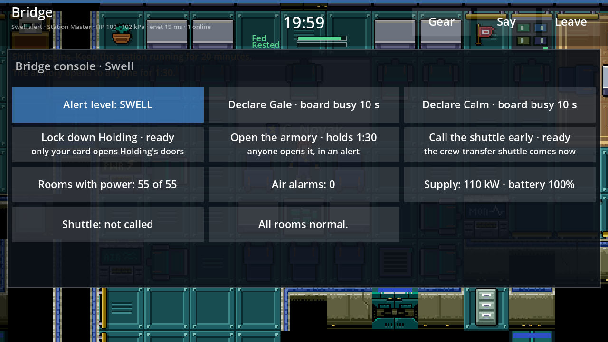


Tıp: tedavi, kimya ve ameliyat
Doktor, sağlık kanadının tek mesleğidir; tedavi, ameliyat ve kimya onun alanlarıdır. Zarar dört türdür: ezilme, yanık, zehir ve oksijen hasarı; sağlık, en yüksek değerden bunların toplamının çıkarılmasıdır. Sağlık analizörü dördünü de, tarayana sayılarla listeler; ekip monitörü yalnızca en kötü türü adlandırır ve yalnızca yaşam belirtisi sensörlerinden itibaren. Bir sargı, bir yanık merhemi, bir antitoksin hapı ve bir epinefrin kalemi, her biri kendi türünü azaltır (acemi yalnızca yarısı kadar).
Kimya odasının dağıtıcısı ve hap presi, odanın elektriğine ihtiyaç duyan katı bir makine. Bir tarifin gerektirdiği reaktifleri taşı (Baz, Asit ve Tuz: vardiyanın stoku Kimya raflarında, Ambar daha fazlasını satar) ve yanında Kimya'ya dokun: tariflerin tek listesi, her biri 4 saniye. Antitoksin Baz ve Tuz, yanık merhemi Asit ve Baz, bir epinefrin kalemi ya da grip antiviral Asit ve Tuz, morfin üçü birden.
Hizmet işleri, içkiler ve acil durum aydınlatması
Manevi Danışman'ın duası (Teselli et ya da kendine Dua et) ve ayini (Şapel'de) bir mürettebat üyesini Teselli bulmuş yapar: bu söz, yorgunluk çubuğunun altında görünür ve açlık ile yorgunluk göstergeleri 3 dakika dörtte bir daha yavaş düşer (yaralı ya da yerdeki biri için 5 dakika, ayinden sonra 4 dakika). Küçük bir nezakettir ve başka bir şey değil.
İçecekler: barın üç sert içeceği (hafifler sayılmaz) 4 dakika içinde oyuncuyu 1 dakika çakırkeyif yapar (en çok bir buçuk dakika). Çakırkeyiflik hafif ve zararsızdır: on adımdan biri yana gider ve ekran biraz sallanır; karartma yok, hasar yok, hiçbir şey kaybolmaz. Ana menünün Hareketi azalt anahtarı ekranın sallanmasını kapatır; yan adımlar oyunun kuralıdır ve kalır.
Acil aydınlatma: elektriğini kaybeden bir oda kendi küçük hücresinden 2 dakika loş kırmızı-turuncu bir acil ışık tutar; kesik bir kablo odayı hemen loş yapar ama karartmaz: kayıp ışığın yüzde 30'u kalır. Kapılar, havalandırmalar ve konsollar ölü kalır. Elektrik gelince bir rölenin tıkırtısı olur ve ışık normale döner.

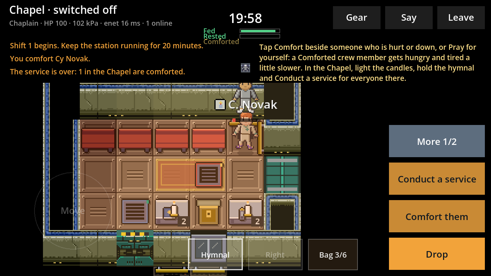
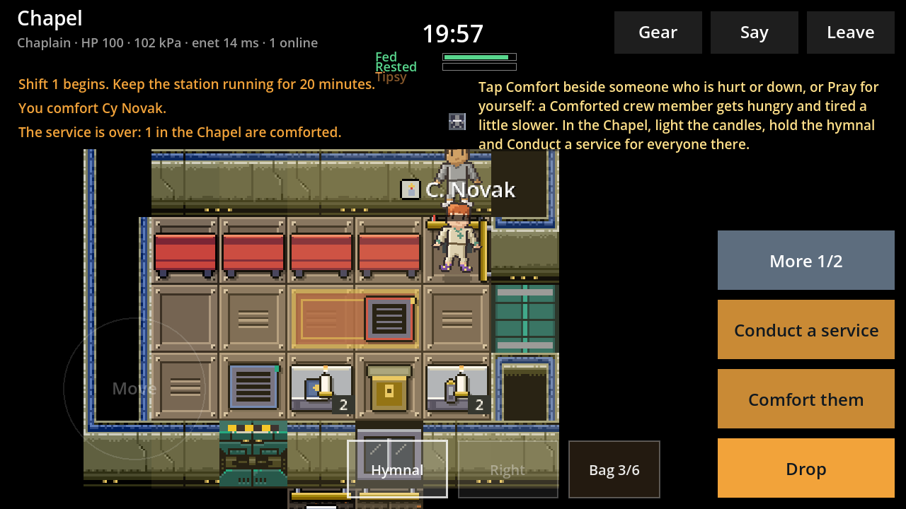
Robotlar
Robotları yalnızca bir Bilim İnsanı, Robotik odasının üreticisinde, gövde plakalarından yapar: bir sağlık robotu (2 plaka), bir inşaat robotu (3), bir elektrik robotu (2) ya da bir nöbet robotu (3). İstasyonda 6 robot olabilir. Her biri bir karoyu 0,4 sn'de yürür, kendi başına çalışır ve bir insandan yavaş ve beceriksizdir. Her vardiya Robotik odasında bir filoyla başlar (bir sağlık robotu, bir inşaat robotu, bir elektrik robotu ve bir nöbet robotu); yıpranmayla kaybedilen bir robotun yerine bir Bilim İnsanı yenisini koyar.
Sağlık robotu, kıyafet sensörleri yaşam belirtilerini ya da konumunu gösteren, ulaşılabilir ve 70 sağlığın altındaki en yaralı oyuncuya gider (sensörler kapalıysa yalnızca açık bir hatta birkaç adım içinde kendi gördüğü birine) ve ziyaret başına 15 puan hasarı iyileştirir (6 saniye). Doktor başında duran bir hastadan uzak durur. Baygını uyandırır ama ölüyü asla canlandırmaz.
İnşaat robotu, 30 saniyedir duran bir gövde yırtığına ya da çatlak bir duvara yürür ve onu 15 saniyelik bir işle, kendi 4 plakasından biriyle kapatır. Plakası bitince Robotik koyuna ya da Hava Tesisi rafına doldurmaya gider; menüsü bunu söyler.
Elektrikçi robotu, 30 saniyedir kesik duran bir kabloyu (istasyonun kendi planında olan ve hiçbir şeyin gizlemediği yerde) yeniden döşer (10 saniye). Ayrıca aşırı yükte atmış bir besleme şalterine yürür ve neden ortadan kalkınca kapatır; yolda elektriği kesilmiş kapıları açar.
Bir Nöbet Görevlisi ya da komuta kartı, Köprüüstü'nde ya da Nöbet Bürosu'nda bir kamera konsolunun Arananlar listesinden bir oyuncuyu, nerede olursa olsun, aranan yapar ya da aranmayı kaldırır. Nöbet robotu aranan bir oyuncuya yürür; oyuncu 3 saniye yanında kalırsa onu kendi 2 kelepçesinden biriyle kelepçeler. Sonra mahkûmu boş bir Nezarethane hücresine çeker, hücre kapısını 3 dakika kilitler ve gider; hücre kapısı mahkûmu bırakınca kelepçeleri robota geri verir. Boş hücre yoksa mahkûmla birlikte Nezarethane'de bekler. Nöbet istediği an mahkûmu çekerek ya da kelepçesini çözerek devralır. İşaret kelepçeyle birlikte gider. Yakalanacak kimse yokken Nezarethane girişinde, koridorlarda, Ambar tezgâhında, İstasyon Şefi'nin kapısında ve ana hava kilidinde devriye gezer; her birinde 8 saniye bekler (dalgalıda 5, fırtınada 2); kapatılınca ya da şarjı bitince durur.
Bir robotun pili 8 işe yeter, sonra bulunduğu yerde kırmızı gözlü durur; biri etkin elinde bir tornavidayla onu düzeltene dek (8 saniye, Bilim İnsanı için yarısı). Bir robotun yanındaki herkes onu kapatıp açabilir. 2 puan ya da daha az pili olan ya da yıpranmış (hasarlı) bir robot kendiliğinden üreticinin yanındaki Robotik bölmesine yürür ve orada şarj olur (her 10 sn'de bir puan). İnşaat, elektrikçi ve nöbet robotları her işte biraz yıpranır; bir Onarım aşınmadan 50 puan alır (toplam 100) ve tükenen robot sonsuza dek gider. Bilim İnsanı'nın konsolu ve Robotik tezgâhı robotları, pillerini ve aşınmalarını listeler. Bir robot yalnızca kendi kartının açtığı kapıları açar: sağlık robotu Doktor kartınınkini, inşaat ve elektrik robotları İstasyon Mühendisi kartınınkini, nöbet robotu Nöbet Görevlisi kartınınkini, her robot da Bilim İnsanı kartınınkini (Robotik odası). Yolunu yalnızca o kapılardan geçirerek planlar; ulaşamadığı bir iş menüsünde Yol yok olarak görünür. İnşaat ve elektrik robotları yollarındaki kilitli ya da mühürlü kapıyı, bir İstasyon Mühendisi levyesi gibi süreli bir işle, zorla açar (menüde Kapıyı zorla açıyor yazar); kartlarının açtığı alanların dışındakini asla, nöbet robotu hiç zorlamaz. Robotlar havasız ve soğukta çalışabilen sızdırmaz makinelerdir; bu yüzden basıncı düşmüş bir servis tünelindeki yırtık da öbürleri gibi yandaki karodan yamanır. Durdur ve Başlat'ın yanındaki menü satırı robotun şimdi ne yaptığını söyler: Devriyede, bir adlı kişiyle ilgileniyor, bir bölümde gövde yırtığını yamıyor, şarj oluyor, plakası bitti.
Robotik odasının robot üreticisi, odanın elektriğine ihtiyaç duyan katı bir makine. Gövde plakası taşıyan bir Bilim İnsanı yanındaki Robot üretici'ye dokunur (düğmeyi başkası görmez): dört robotun (Sağlık robotu, İnşaat robotu, Elektrik robotu, Nöbet robotu) tek listesi; her biri için gereken plakalar (2, 3, 2, 3), 20 saniye iş (Bilim İnsanı için yarısı). Robot makinenin yanına bırakılır; istasyonda en çok 6 olabilir. Robotlar kendi başlarına çalışır.
Araştırma: prototip, saha denemesi ve yayın
Bir proje bir ihtiyaç, bir plan, bir numune, iki çalıştırma, bir çözümleme, bir inceleme mührü, bir prototip, bir saha denemesi ve bir serbest bırakmadır (toplam yaklaşık 12 dakika; vardiya başına bir serbest bırakma hedeflenir). Projeler: Servo seti (20 puan), Basınç contası (30 puan), Atel örgüsü (30 puan), Kültür çubuğu (40 puan), Sensör kartı (45 puan), Taşıma dronu (50 puan), Korumalı siperlik (60 puan). Çürütülmüş bir bulgu dalını küçük bir ödülle kapatır ve hiçbir şey yapmaz.
Prototip, tedarik konsolundan alınan parçalarla (gövde plakaları, bakır külçeler, reaktifler) Robotik tezgâhında bir Bilim İnsanı tarafından yapılır: servo seti (plaka, bakır külçe), basınç contası (servo seti, sızdırmazlık contası), atel (plaka, baz reaktifi), kültür çubuğu (tuz ve baz reaktifi), sensör kartı (bakır külçe, tuz reaktifi, plaka), taşıma dronu (servo seti, plaka), korumalı siperlik (sensör kartı, plaka, sızdırmazlık contası); sızdırmazlık contası bir plaka ve bir baz reaktifidir. 1 dakika sürer. Tezgâh ark yapıp onu kullanana çarpabilir; bu aynı zamanda prototipi kötüleştirir.
Saha denemesi prototipin ilk gerçek kullanımıdır ve isteyen bölüm yapar: İstasyon Mühendisi contayla bir yırtığı yamalar, Doktor atelle birini tedavi eder ya da çubukla ameliyat eder, İstasyon Mühendisi kartı takar ya da siperliği kaynaklar, Ambar Görevlisi dronla bir sandık gönderir, Bilim İnsanı servo setini takar. Prototip başarısız olabilir (kısmen doğrulanmış bir bulguda daha sık): proje notlarla plana döner ve sonraki denemeler biraz daha iyi gider. Her iki durumda da kullanıcı bir Deneme raporu alır; bir Bilim İnsanı elindekini projeyi serbest bırakmak için Ar-Ge konsoluna teslim eder: araştırma puanları ödenir ve tezgâh eşyayı herkes için yapar (deneme talep eden bölümün değilse puanın yüzde 75'i).
Dört hizmet ötekilere de yardım eder: cevher analizi ham demir ya da bakır cevherini sınıflandırır ve zengin sınıf, rafineriye o cevherin her ikinci eritişinde bir parça fazla verir (orta sınıf her dördüncüde); malzeme testi en ince üç gövde duvarını söyler; numune teşhisi antiviral ilacı ve nezle ilacını zamanın %60'ında etkili kılar ve hastaları sayar; ürün denemesi bir ürüne daha iyi büyüme (%125 hızlı) ya da vardiya boyunca her hasatta bir parça fazla verir.
Araştırma bütçesi: Direktörlük, vardiya başında istasyona bir hibe verir (on kişilik mürettebat için 100 puan, her kişi için 2 fazla ya da az); havuz bütün Bilim İnsanları için tektir ve Ar-Ge konsolunda ile Robotik tezgâhında görünür. Bir projeyi başlatmak düğmesinde yazan başlangıç bedelini harcar; serbest bırakma puanlarını geri öder (doğrulanan bulgu hepsini, kısmen doğrulanan yüzde 60, çürütülen yüzde 30). Bırakılan proje başlangıç bedelinin yüzde 30'ini, ilk başarısız saha denemesi yüzde 25'ini geri verir. Puan kalmayınca yeni proje başlatılamaz. Havuz ayrıca Depodan nadir numuneler (analiz bakır külçesi, reaktif seti, deniz numunesi, buz numunesi) satın alır; bunlar veriyi 10 puan iyileştirir. Tedarik puanları Ambar Görevlisi'ne aittir.
Her haritanın Müdürlüğün belirlediği kendi araştırma programı vardır: yukarıdaki ortak konular ve haritanın kendi beş konusu; bunları Ar-Ge konsolu listeler. Numune bir ölçüm de olabilir: programın cihazında (bir röle test rafı, bir veri terminali) herkes tarafından 20 saniyede alınır, eşya gerekmez.
Robotik tezgâhı (katı bir aygıt, odanın elektriğine ihtiyaç duyar; Heron'da Robotik odasında robot üreticisinin yanında bir tane var). Robotik tezgâhı'na dokun: prototip aşamasında bir projesi olan Bilim İnsanı, prototipi taşıdığı eşyalardan yapar (1 dakika); liste parçaları ve serbest bırakılmış eşyaları yapar (her biri 15 saniye). Tezgâhı yalnızca bir Bilim İnsanı çalıştırır. Tezgâhın kendi riski, onu çalıştıranı çarpan bir elektrik arkıdır (yalıtımlı eldivenler esirger). Plakalar, bakır çubuklar ve reaktifler tedarik konsolundan satın alınır.


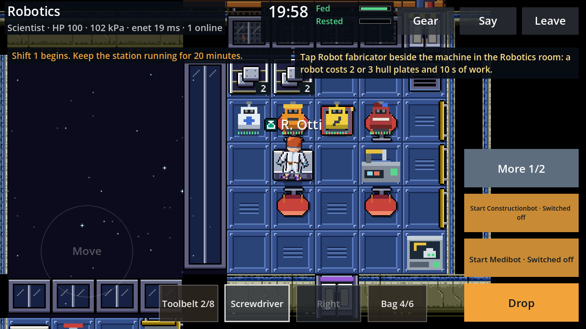
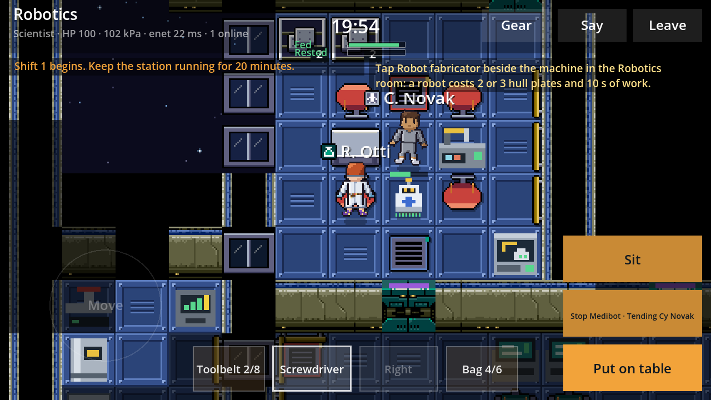
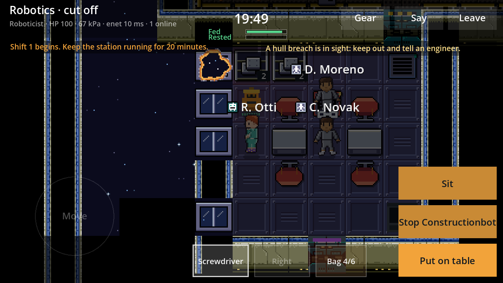


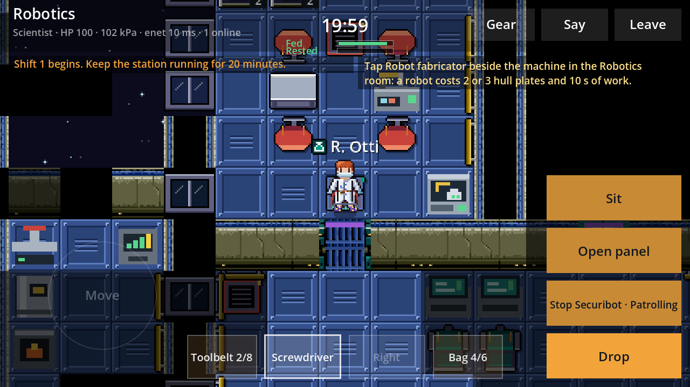

Atık hattı
Çöp kutuları holde, barda, mutfakta, seranın içinde, Revir'de, lavaboda, Mürettebat Yatakhanesi'nde ve atölyelerde durur. Çöp olan her şeyi tut ve Çöpe at'a dokun: bir kutu 6 parça alır, dolu olan bir sonrakini yere bırakır. Kartlar, çantalar, sandıklar ve portal vinç çöp değildir. Yanlışlıkla atılan şey hemen kaybolmaz: son parça girdikten sonra 60 sn kutuda durur ve kutunun yanındaki herkes Kutudan geri al'a dokunup içindekini okuyabilir ('N sn sonra boşalır' yazar) ve herhangi bir parçayı boş ele geri alabilir. Kutu bir şey tuttuğu sürece küçük kehribar bir etiket gösterir (doluyken kırmızı, son on saniyede yanıp söner).
Vakum boruları her kutudan Ambar'ın deposundaki toplama odasına tavanlardan geçer (harita onları çizmez; yol zemin ve kapılar üzerinden en kısa yoldur, bu yüzden yollar bir gövdeyi paylaşır). Bir kutunun 60 sn'si dolunca, borusu açıkken ve odasında elektrik varken toplayıcı her 3 saniyede bir ondan bir parça çeker. Her çekişin yüzde 8 başarısız olma ihtimali vardır: yoldaki boru tıkanır (başarısızlıkların yüzde 65'i) ya da patlar, atık kutusunda kalır ve o borunun ardındaki her kutu kesilir. Aynı anda en çok 3 boru kapatılır.
Bakım Görevlisi tıkanıklığı vantuzla açar (Tıkanıklığı aç'a dokun, 3 saniye, Bakım Görevlisi için yarısı); bir İstasyon Mühendisi patlağı etkin elinde İngiliz anahtarı, diğerinde boru parçasıyla onarır (Boruyu onar'a dokun, 5 saniye; boru parçaları tornada çevrilir).
Geri dönüşüm makinesi, odasının elektriği olduğu sürece her 6 saniyede bir atık parçasını ayrıştırır: metal gövde plakasına preslenir, cam cam levhaya eritilir, plastik teslimat platformuna giden granüle dönüşür.
Sipariş konsolunda platformu gönder ve granüller satılır; plakalar ve levhalar geri dönüştürücünün yanında ihtiyacı olana kalır. Atıktan plakaya ve cama: döngü bu.
Bir çöp kutusu, üstünden yürünebilen bir zemin karosundaki küçük bir kutu. Atmak istediğin her şeyi tut ve Çöpe at'a dokun: 6 parça alır ve dolu olan bir sonrakini yere bırakır. Kartlar, çantalar, sandıklar ve portal vinç çöp değildir. Vakum atığı toplayıcıya çeker. Kutudaki küçük bir ışık, borusu açıkken yeşil, bir tıkanıklık ya da patlak onu toplayıcıdan kopardığında kırmızıdır. Atık, son parçadan sonra 60 sn kutuda kalır (kehribar bir etiket bir şey tuttuğunu gösterir): listeyi okumak ve bir parçayı geri almak için Kutudan al'a dokun.
Atık hattının toplama odası (docs/DISPOSAL.md), Ambar'ın deposunda (atık çıkışında) odanın elektriğine ihtiyaç duyan katı bir varil. Her çöp kutusundan gelen vakum boruları ona çıkar: her 3 saniyede bir, borusu açık her kutudan bir atık parçası çeker, en çok 24 parça. Göstergesi ne kadar dolu olduğunu gösterir; yanındaki geri dönüştürücü onu boşaltır. Kimse onu elle çalıştırmaz; ne olduğunu öğrenmek için yanında Atık toplayıcı'ya dokun.
Atık hattının geri dönüştürücüsü, Ambar'ın deposunda odanın elektriğine ihtiyaç duyan katı bir pres. Toplama odasından her 6 saniyede bir atık parçasını ayrıştırır: metal (aletler, plakalar, hücreler, tüpler) gövde plakasına preslenir, cam (ampuller, gözlükler, şırıngalar, şişeler, cam kırıkları) cam levhaya eritilir, geri kalan her şey satılmak üzere teslimat platformuna giden plastik granüle dönüşür. Işığı çalışırken yeşil, boştayken kehribar, çıktısı için yanında boş zemin kalmayınca kırmızıdır.
Taşıyıcı bant (hareket eden oklu bir zemin karosu sırası), üstündekileri odada elektrik varken saniyede bir karo hızla geri dönüştürücüden rafineriye taşır. Sonundaki metal hurda kendiliğinden rafinerinin hunisine düşer, böylece Ambar Görevlisi ya da Madenci yalnızca Cevheri erit'e dokunur. Sona ulaşan başka her şey orada bekler. İnsanlar üstünden serbestçe yürür; onları hareket ettirmez.


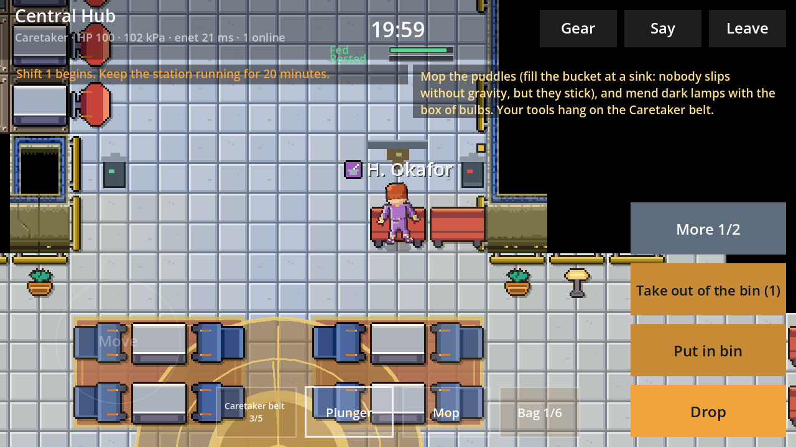
Nöbet kameraları
Nöbet kameraları holde, geçiş tüplerinde, bölümlerin kapılarında ve ambar alanlarında asılıdır. Bir kamera, odasında elektrik varken hiçbir duvarın ya da kapalı kapının saklamadığı genişleyen bir koni içinde 7 karoya kadar ileriyi görür.
Kameralar Köprüüstü'nde ve Nöbet Bürosu'nda bir kamera konsolunda, İstasyon Şefi'nin, Sicil Memuru'nun ya da bir Nöbet Görevlisi'nin kimlik kartıyla okunur.
Listeden bir kamera seç: konsol, görüntüsündeki kişileri söyler (ad, meslek, yer, yerde ya da ölü olup olmadığı), en çok 16 kişi, ve onları haritada daire içine alır.
Aynı konsollarda, bir Nöbet Görevlisi ya da komuta kimlik kartı için, Arananlar listesi de vardır: nerede olursa olsun her mürettebat için Aranan yap ya da Aranmayı kaldır düğmeli bir satır. Aranan oyuncunun başının üstünde, Nöbet ve komuta telefonlarında kırmızı bir işaret görünür ve bir nöbet robotu peşine düşer.
Her kamera ayrıca son 90 saniyede kimi nerede gördüğünü tutar. Nöbet Bürosu'nun konsolunda bir kamera seç ve Bu kameranın son 90 sn'sini oku'ya dokun (5 saniyelik bir iş): kayıt her kalış için şunu söyler: "Biri, Bakım Görevlisi tulumunda, Ambar Tezgâhı bölümünde, 2:15 önce". Bir meslek, bir yer ve bir zaman verir; ad ise yalnızca bir kimlik kartı görünürken verilir. Kaydı Avukat'a vermek için bas.
Bir yapay zekâ ekibe katıldığında (#25) kameralar onun gözleri olacak; bunların hiçbiri henüz kurulmadı.
Bir zemin karosunun üstünde asılı, merceğinin baktığı yöne bakan bir güvenlik kamerası. Genişleyen bir koni içinde 7 karoya kadar ileriyi, hiçbir duvarın ya da kapalı kapının saklamadığı her şeyi, odasında elektrik varken görür; kırmızı ışığı yanıp söner. Yalnızca kamera konsolunda görünür.
Bir kamera konsolu (odasının elektriğine ihtiyaç duyan katı bir aygıt), Köprüüstü ve Nöbet Bürosu içinde. Yalnızca kimlik kartı İstasyon Şefi'nin, Sicil Memuru'nun ya da bir Nöbet Görevlisi kartı olan okur. Yanında dur ve Kamera konsolu'na dokun: istasyonun kameralarının listesi; birini seç, liste canlı olup olmadığını, görüntüsünde kimin olduğunu (ad, görev, yer, yerde ya da ölü olup olmadığı) gösterir ve harita onları halkayla işaretler. Elektriksiz bir odadaki kamera sinyal göstermez. Bir Nöbet Görevlisi ya da komuta kimlik kartı, konsolun yanında Arananlar listesini de bulur: odasında elektrik varken, nerede olursa olsun her mürettebat için Aranan yap ya da Aranmayı kaldır düğmeli bir satır.
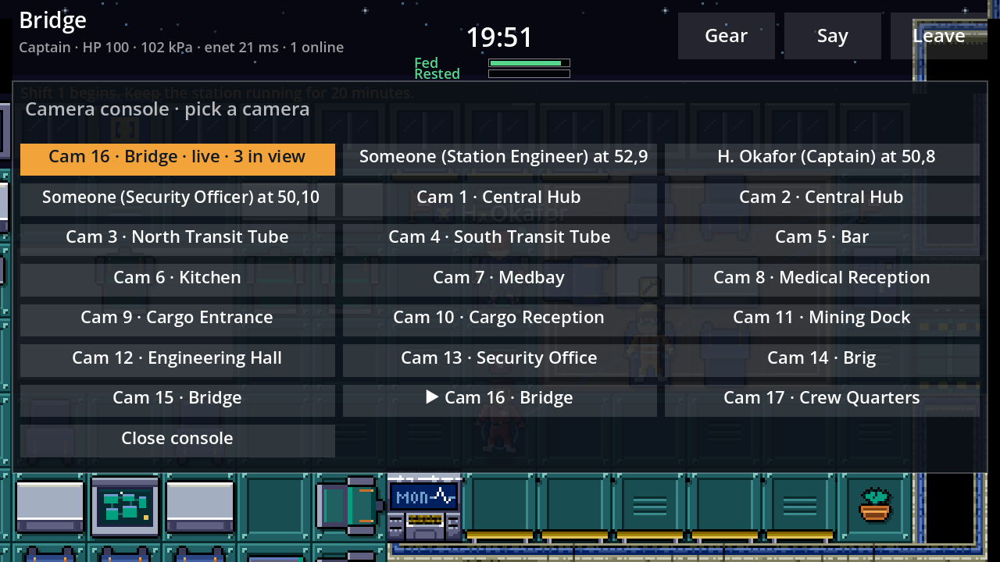

İzler ve eşleşme listesi
Zarar ve zorlama kimsenin göremeyeceği izler bırakır: cop darbesi kan, taser bağından bir lif, biber gazı bir kalıntı; kelepçeleme, kesilmiş bir kablo, kırılan bir şey, kilitli dolaptan alınan eşya ya da sahte bir kâğıt parmak izi bırakır (eldiven iz bırakmaz), zorlanan bir kapı ise lif. Her iz kimin bıraktığını taşır ve yaklaşık dört dakikada solar (kalıntı 150 saniye sonra); bir paspas darbesi, Bakım Görevlisi'nin silmesi ya da çevresinde duran üç kişi onu siler.
Adli tarayıcı (Nöbet Bürosu'nun silah dolabında bir tane) bir karonun çevresindeki izleri kaldırır ve bir İz fişi basar: ne, nerede, ne kadar eski ve bir desen kodu. Bir fiş kimsenin adını vermez. Onu Nöbet Bürosu'nun konsoluna götür.
Nöbet birinin parmak izini alır (8 saniyelik bir iş): kelepçeli, yerde ya da Parmak izimi sun'a dokunmuş (60 saniye geçerli) biri; kart dört kodunu ve adını taşır. Kayıt konsolunda fişi ve kartı gir, Eşleştir'e dokun ve Eşleşme fişini bas: eşleşme (kartın adıyla) ya da eşleşme yok. Bir eşleşme tek tür delildir; ağır bir suç (3. sınıf) için görülen duruşma iki tür delil ister, örneğin bir iz ve bir kamera satırı.
Avukat kaydı ve fişleri ister: bir dilekçeyi ve öbür kâğıdı tut ve Öbür kâğıdı buna tuttur'a dokun; dilekçeyi okuyan onları da okur.

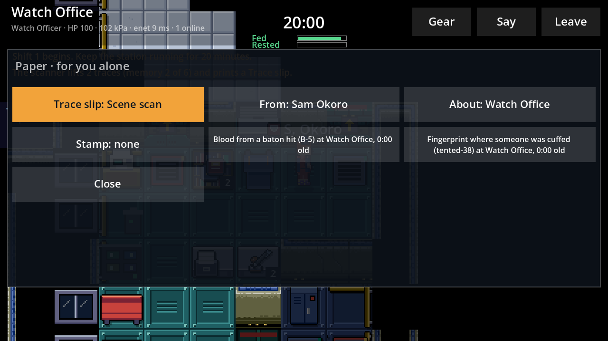
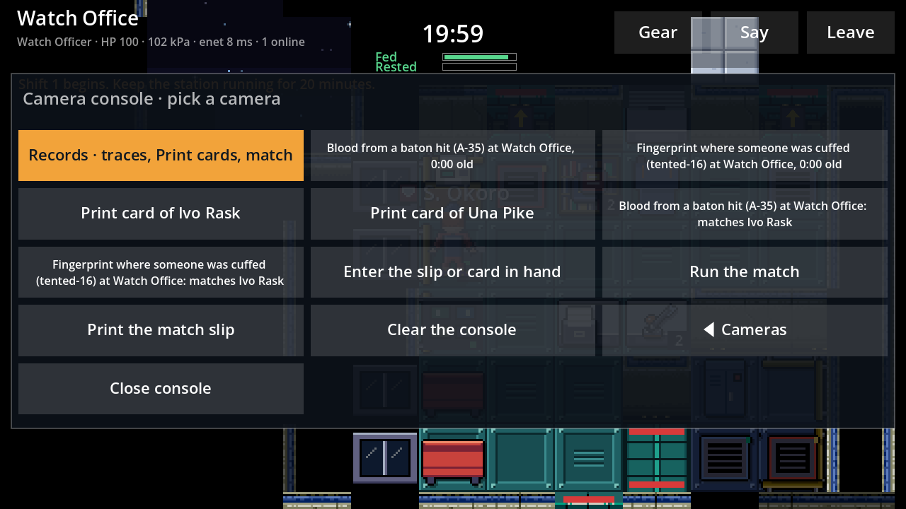
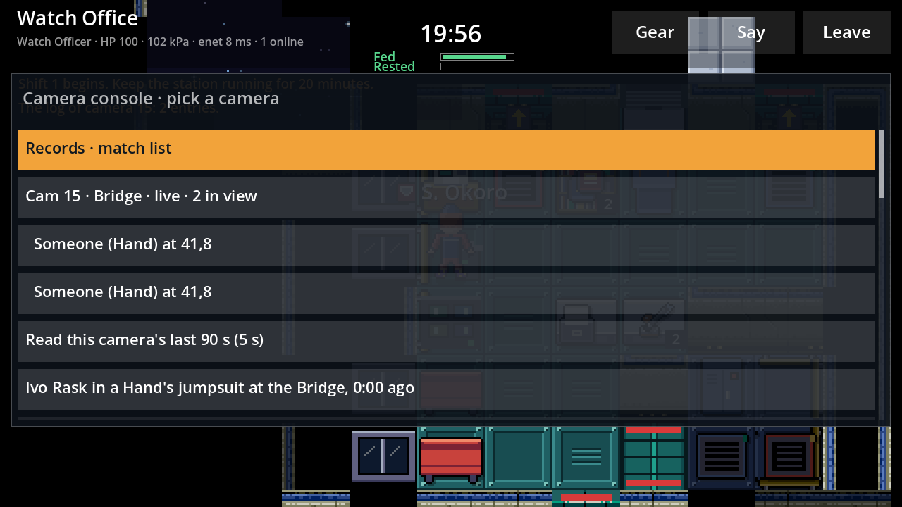
Kapı kırmak
Bir kapıda sürgü düğmesi yoktur. Bakım paneli arkasında her biri farklı renkte 5 tel vardır; bir kapıyı sürgülemek, ışığını denemek ya da kartsız açmak bunlarla uğraşarak yapılır. Kapının yanında dur, bir tornavida tut ve Paneli aç'a dokun (yeniden kapatmak için Paneli kapat); 2 sn sürer, İstasyon Mühendisi için 1 sn, ve erişim gerekmez. Açık bir panel kapının üstünde görünür. Sonra tellerin renklerine göre, her birinin ne yaptığı ve kesik olup olmadığıyla listelenmesi için Kapı telleri'ne dokun ve etkin elindeki aleti hemen bir tele uygulamak için o tele dokun.
- Tel kesici sağlam bir teli keser.
- Bir kablo makarası kesilmiş bir teli onarır.
- Bir çoklu alet sağlam bir tele darbe verir; yalnızca şunlarda bir etkisi olur: sürgü, sürgü lambası ve açılma.
| Tel | Kesilirse | Darbe verilirse |
|---|---|---|
| Güç | Kapı ölüdür: açılmaz, sürgülenmez ya da mühürlenmez ve sürgülü değilse bir levye onu zorla açar. | Hiçbir şey. |
| Sürgü | Sürgüler olduğu gibi kalır: sürgülü kapı açılamaz ve serbest kapı sürgülenemez. | Kapıyı elektrik varsa sürgüler ya da sürgüyü açar. İçinde biri duran bir kapı sürgülenemez. |
| Sürgü lambası | Sürgü göstergesi, kapı sürgülü olsun olmasın, karanlık kalır. | Test ışığını açıp kapar; ışık, kapı sürgülü olsun olmasın, sürgü göstergesini gösterir. |
| Açılma | Kapı kimse için açılmaz, erişimi olsun olmasın; bir levye onu zorla açar. | Elektrikli kapalı bir kapıyı, istediği erişim ne olursa olsun, hemen açar. |
| Emniyet | Basınç kilidi kapalıdır: kapı hiç mühürlenmez ve mühürlü olan açılır. | Hiçbir şey. |
Hangi rengin hangisi olduğu kapıdan kapıya ve vardiyadan vardiyaya değişir ve yalnızca açık panelin başındaki biri onları görür. Renkler: kırmızı, mavi, yeşil, sarı, beyaz.
Masalar, raflar, dolaplar, çekmeceli dolaplar ve koltuklar
Eşyalar yalnızca yerde durmaz. Mobilya yolu keser, bu yüzden etrafından dolaş.
- Masa: Yolu keser. Üstünde eşyalar durur: yanında dur ve elindekini Masaya koy, ve zeminden gibi ondan Al. Masalar ayrıca kabul tezgâhlarını (bir yanda katip, öbür yanda halk için koltuğu olan bir tezgâh), uzun bir yemek masasını ve salonlardaki alçak masaları oluşturur. Kabul tezgâhları servis pencereleridir: her pencerede bir cam bölme ve bir sarmal kepenk. Arkasındaki koltukta biri oturdukça kepenk açıktır ve kimse oturmayınca kapanır; masayı çalıştıran onu elle de açıp kapatabilir (Kepengi aç, Kepengi kapat). Kapalı bir kepenk, halkın tezgâha bir şey koymasını, ondan bir şey almasını ya da üstünden uzanmasını engeller.
- Raf: Alet ve malzeme için duvar boyunca bir raf. Yolu kapatır ve bir masa gibi çalışır: Rafa koy, Al.
- Dolap: Yolu keser; gözden uzak, birbirine benzeyen eşyalardan 40 yuva, her yuvada 8 tane taşır. Yanında dur ve İçeriği görmek için Dolabı aç: her tür için bir satır ve kaç tane olduğu: birini almak için bir satıra dokun, İçine koy elindekini koyar (Hepsini koy öbür elinden ve sırt çantandan aynı türü ekler). İçini yalnızca sen görürsün ve uzaklaşınca kapanır. Kilitli bir dolabın ışığı vardır, onu açmayan kimlik kartı için kırmızıdır; yalnızca istediği erişime sahip, takılı ya da kullanılan elde tutulan bir kartla açılır. Açık dolabın listesindeki İçine saklan satırı seni içeri kapatır, kimse görmez; sen çıkana ya da biri açana kadar orada kalırsın.
- Tezgâh: Oturmak için bir tezgâh; merkezde ve yatakhanenin ortak odasında. Yanında dur ve Otur'a dokun: üstüne oturursun, kemerli. Üstünde hiçbir şey durmaz ve kimse oturmadan üstüne yürümez.
- Koltuk: Bir sandalye, bir tabure, bir konsol koltuğu ya da bölmesindeki kayışlı bir tuvalet oturağı; ya da yatılan bir mobilya: Mürettebat Yatakhanesi'ndeki bir yatak veya ameliyat masası. Bir koltuğun yanında dur ve Otur'a dokun: üstüne geçip kemerli, koltuğun baktığı yöne bakarak oturursun. Yatak koltuk değildir: boş birine adım at (zemin gibi üstünden yürünür) ve Uyu'ya dokun, ya da ameliyat masasında Uzan'a dokun. Bir koltuk bir kişi alır. Kalkmak için Kalk'a dokun ya da boş bir adım at.
- Ekim tepsisi: Serada bir ekim tepsisi. Etkin elinde bir tohumla yanında dur ve Ek'e dokun; içinde genç bir bitki görünür, sonra ürüne göre 2 dakika ile 6 dakika sonra olgun biri ve Hasat onu toplar. Kendi suyunu, besinini, otlarını ve sağlığını tutar: satır için Tepsiyi kontrol et'e, bakmak için Sula, Gübrele, Ot ayıkla ve Tedavi et'e dokun. Kuru toprak, otlar ve lekeler onda görünür. Yolu kapatır.
- Ocak: Mutfakta bir pişirme yeri. Malzemeleri bir masa gibi üstüne koy, sonra Pişir'e dokun (listeden bir yemek seç, 6 ile 12 saniye, Şef için yarısı): malzemeler tükenir ve yemek ocağa iner. Tarifler: hasat karışımı (protein bloğu, patates ve soğan), protein tavası (protein bloğu ve fasulye), sebze güveci (havuç, patates ve soğan), mısır çorbası (mısır koçanı, patates ve soğan), domatesli pilav (pirinç ve domates), pirinç kasesi (pirinç ve fasulye), fasulye güveci (fasulye ve domates), mantar tavası (mantar ve soğan), patates çorbası (patates ve soğan), patates kızartması (2 patates), meyve kompostosu (elma ve pancar şekeri), domates çorbası (2 domates), pide (2 buğday), havuç salatası (2 havuç), soğan suyu (2 soğan) ve fırın patates (patates). Yolu kapatır.
- Bar karıştırıcısı: Barın karıştırma makinesi. Malzemeleri üstüne koy ve elinde temiz bir bardakla Karıştır'a dokun (3 saniye, Barmen için yarısı): içecek bardağı doldurur, şeker ise karıştırıcıda kalır. Tarifleri: domates gazozu (domates), malt çayı (buğday) ve pancar şekeri (şeker pancarı). Soğutucusu buz kovasını da doldurur (Buz kovasını doldur). Yolu kapatır.
- Dolap: İki oda arasındaki duvara gömülü, kulplu ve küçük pencereli yassı bir dolap. Bir dolap gibi çalışır (8 benzer şeyden 40 yuva alır; Dolabı aç, bir satıra dokunup birini al, İçine koy elindekini koyar) ama duvarın iki yanından da açılabilir, böylece bir oda onu doldurur, öbürü ondan alır. Üstündeki kilit, onu açmayan kartlar için kırmızı yanan bir ışık, adını verdiği erişimden bir kart ister, ya da birkaçından herhangi birini.
- Eşya: Dekor ve donanım: saksı bitkileri (duvara, köşeye, pencerenin önüne ya da sıra halinde dururlar; ekicilerle ayaklı lambalar ve bayraklar taşıyabileceğin şeylerdir, dekor değildir), kitaplıklar (kitapları ve yasa kitaplarını geri alır), bir kürsü, bayraklar ve Savunma Odası'nda bir faks makinesi. Bazı donanımlar kullanılır: ameliyathanenin alet tepsisi ve anestezi standı küçük şeyleri bir raf gibi alır, lavabolar (ameliyathane ve lavabo) elleri yıkar, Morg'un çekmeceleri açılır (Çekmeceyi aç: tepsi dışarı kayar; Cesedi tepsiye koy ölü bir bedeni üstüne yatırır, Birine yardım et baygın birini yatırır, İçine saklan seni içeri kapatır, Çekmeceyi kapat çekmeceyi kapatır; Cesedi çıkar içindekini yanındaki zemine yatırır) ve otopsi masası bir beden alır (Cesedi masaya yatır) ve Otopsi'ye dokunana özel bir rapor verir. Yolu kapatır; çevresinden yürü (harita her kapıyı ve odayı ulaşılabilir tutar). Bakım tünellerinde dekor yoktur: oradaki her donanım içinde eşyalar bulunan bir raf, dolap ya da depo sandığıdır. Zemin süslemeleri (halılar, kilimler, merkezin zemin kakması, İstasyon Şefi koltuğunun platformu, ameliyathanenin steril zemini, tünel kapısındaki dikkat şeritleri) yalnızca boyadır.
- Depo sandığı: Servis geçitlerinde, yere sabitlenmiş, çelik bantlı ağır bir sandık. Bir dolap gibi çalışır (8 benzer şeyden 40 yuva alır; Sandığı aç, bir satıra dokunup birini al, İçine koy elindekini koyar, Sandığı kapat) ve asla kilitli değildir. İçini yalnızca sen görürsün ve uzaklaşınca kapanır. Her tünel cebinde bir ile üç raf, dolap ve sandık vardır; içlerinde farklı şeyler bulunur: el fenerleri, mumlar, yangın söndürücüler, ucuz eldivenler, kitaplar, kablo makaraları, plakalar ve aletler. Bir sandığa konan mum söner.
- Torna: Makine Atölyesi'nin tornası. Üstüne plakalar koy (Tornaya koy, üstünde yatan her plaka sayılır), ona dokun, bir parça seç: pil hücresi (3 plaka, 20 saniye), invertör modülü (2 plaka, 15 saniye), bakır tel (1 plaka, 8 saniye), güneş paneli (4 plaka, 24 saniye), cıvatalar (1 plaka, 5 saniye), boru (2 plaka, 6 saniye), valf kiti (3 plaka, 10 saniye), pompa kiti (4 plaka, 14 saniye), havalandırma kiti (2 plaka, 8 saniye), temizleyici kiti (2 plaka, 8 saniye), rotor yatağı (2 plaka, 15 saniye), rotor contası (1 plaka, 10 saniye) ya da rotor fırçası (1 plaka, 5 saniye). İşten sonra parça tornada, alınmak üzere durur; gereken plakalar tükenir. Plakalar şimdilik ham metaldir (Madenci sonra cevher getirir). Yolu kapatır.
- Sarım tezgâhı: Elektrik Atölyesi'ndeki sarım tezgâhı (Millrace İstasyonu'nda Trafo Odası'nda). Trafonun vinçle kaldırılıp buraya indirilen çekirdeği, burada bir bakır tel makarasıyla yeniden sarılır (Yeniden sar, 40 saniye). Yolu kapatır.
Oturaklar sandalye, tabure, konsol koltuğu ve banklardır: Köprüüstü'nün konsol koltukları, holün ve mutfak tezgâhının sandalyeleri, bankları ve tabureleri, Revir'in ve ambarın masaları, bir de Yanaşma Kapısı'na yanaşan değişim mekiğinin kayışlı koltukları. Hiçbiri servis geçitlerinde değil.
Bir koltuğun yanında dur ya da boş bir koltuğa çık ve Otur'a dokun (düğme, elindeki aletin ve erişimdeki konsolların düğmelerinden sonra gelir). Karosuna geçersin ve koltuğun yönünde kayışlı oturursun; seni gören herkes oturduğunu görür. Oturmak zaman almaz ve hiçbir şey işini engellemez. Kemerli biri yerinde kalır ve yer çekimsiz bir istasyonda yüzmez. Bir koltuk bir kişi alır.
Kalkmak için boş herhangi bir yöne yürümen yeter (Ayağa kalk düğmesi de aynısını yapar ve seni durduğun yere geri koyar). Kimsenin oturmadığı koltuğun üstünden zemin gibi yürünür, bu yüzden sandalyeler odayı asla kapatmaz; yalnızca birinin oturduğu koltuk yolu kapatır.
Bu istasyondaki kilitli dolaplar: Köprüüstü (komuta erişimi), EVA Hava Kilidi (mühendislik erişimi), İstasyon Şefi'nin Kamarası (komuta erişimi), Sicil Memuru'nun Kamarası (komuta erişimi), Revir (sağlık erişimi), Revir (sağlık erişimi), İnşaat Atölyesi (mühendislik erişimi), Mutfak (mutfak ya da botanik erişimi), Silah Odası (tüm alanlar erişimi), Ambar Bölmesi (ambar erişimi), Hücre 3 (nöbet erişimi), Hücre 1 (nöbet erişimi) ve Hücre 2 (nöbet erişimi). Diğer her dolap herkese açılır.
Konsollar
Ekranında istasyonun nasıl olduğunu söyleyen bir şey yok: istasyon sorunu telsizden duyurur, gerisi konsollardan okunur. Canlı görmek için birinin yanında dur. Her konsol gibi yalnızca odasında elektrik varken çalışır; elektrik yoksa karanlıktır.
- Ekip monitörü (MON, Revir'de): bildirimde bulunan her kıyafet, sahibinin sensörleri ne kadarını söylemeye ayarladıysa o kadarıyla (canlı ya da ölü, sağlık, nerede).
- Güç monitörü (PWR, yeri: Trafo Odası): diziler, güneş ve sonraki gölgeye kalan süre, pil bankası, yük ve hangi odalarda elektrik olduğu, öbürlerinde neden olmadığı.
- Atmos konsolu (AIR, Hava Tesisi'nde): hava alarmı olan her oda, en kötüsü başta ve neyin ters gittiğiyle birlikte: gövde yırtığı, ortalamada 80 kPa'dan az hava, kötü hava (O2, CO2, kor gazı, sıcaklık) ya da elektrik yokluğundan duran menfezler; kartı için bir odaya dokun. Herhangi bir İstasyon Mühendisi, buradan bir odaya Panik ya da Normal gönderebilir ya da tüm kırmızı odalara Panik verebilir. Sorunlu bir oda varken konsol haritada kırmızı yanıp söner, böylece alarm uzaktan görülür. Panelinden kapatılmış odalar yalnızca not edilir; alarm vermezler.
Tedarik
İstasyon her vardiyaya 40 tedarik puanı. Sipariş konsolu (ORD, yeri: Ambar Tezgâhı; ambar erişimi gerekir) kalan puanı kendi yüzünde de gösterir, böylece gören herkes bilir; talep konsolu (REQ, yeri: Ambar Girişi) herkese açıktır ve puan göstermez. Her konsol gibi her biri yalnızca odasında elektrik varken çalışır; elektrik yoksa karanlıktır.
- İstek: talep konsolundaki herkes bir eşya isteyebilir. İstek, sipariş konsolunun listesinde bekler (aynı anda en çok 5) ve Ambar Görevlisi bunu kulaklıktan duyar. Talep konsolu isteklerine ne olduğunu gösterir: onaylandı ve yolda, platforma indi ya da reddedildi.
- Onayla: sipariş konsolunda bir isteği onaylamak bedelini düşer ve 6 sn iş sürer (Ambar Görevlisi için 3 sn). Sipariş, 40 sn sonra teslimat platformuna (PAD) iner, Ambar Görevlisi onayladıysa 20 sn sonra, her seferinde bir sipariş. Siparişi isteyen biri alana, ya da ayrılana ya da artık canlandırılamayana kadar onun için işaretli kalır; indiğinde o ve Ambar Görevlisi haber alır. Siparişin inmesinden önce onu isteyen ayrılırsa ya da artık canlandırılamazsa sipariş geri gider, bedeli iade edilir ve Ambar Görevlisi bunu duyar.
- Reddet ya da geri çek: isteği yapan, talep konsolunda isteğini hemen geri çekebilir. Ambar erişimi olan başka biri, sipariş konsolunda onu reddedebilir; bu 3 sn iş sürer (Ambar Görevlisi için 1.5 sn); isteği yapan ve Ambar Görevlisi kimin reddettiğini duyar. İsteği yapan 3 dakikadır vardiyada yoksa ya da öldüyse ve artık canlandırılamıyorsa, istek de listeden düşer.
- Dışarı sevk: sipariş konsolundaki Platformu sevk et, platformdaki malları gönderir: sandık: 5 puan, boş gaz tüpü: 2 puan, plastik granül: 1 puan. İstasyonun kendi eşyaları, aletler ve evrak dahil, ve henüz kimsenin almadığı teslimatlar kalır. Depoda 6 sandık bekler (Ambar Bölmesi).
- Evrak: onaylanan her sipariş, sipariş konsolunda bir sipariş formu bastırır. Onu ambar mührüyle mühürle (Ambar Görevlisi bir tane taşır, bir tane de şurada durur: Ambar Tezgâhı) ve dosya dolabına (FIL, yeri: Ambar Tezgâhı) dosyala: 2 puan.
| Sipariş | Bedel |
|---|---|
| Gövde plakası | 5 puan |
| İlk yardım çantası | 5 puan |
| Hava tankı | 5 puan |
| Kablo makarası | 3 puan |
| Protein bloğu | 4 puan |
| Buğday tohumu | 2 puan |
| Domates tohumu | 2 puan |
| Fasulye tohumu | 2 puan |
| Patates tohumu | 2 puan |
| Pirinç tohumu | 2 puan |
| Mısır tohumu | 2 puan |
| Havuç tohumu | 2 puan |
| Soğan tohumu | 2 puan |
| Elma çekirdeği | 2 puan |
| Mantar sporu | 2 puan |
| Pancar tohumu | 2 puan |
| Gübre çuvalı | 3 puan |
| Bitki spreyi | 2 puan |
| Kâğıt destesi | 2 puan |
| Baz reaktifi | 2 puan |
| Asit reaktifi | 2 puan |
| Tuz reaktifi | 2 puan |
| Oksijen tüpü | 10 puan |
| Azot tüpü | 10 puan |
| Bakır külçe | 4 puan |
| Yakıt varili | 8 puan |
| Donmuş erzak | 5 puan |
| Bahçe meyve suyu | 2 puan |
| Tatlı şurup | 2 puan |
| Kehribar maya | 2 puan |
| Bitter | 2 puan |
| Yörünge beyazı | 3 puan |
| Çukur karası | 3 puan |
| Tuzlu tonik | 2 puan |
| Basınçlı soda | 2 puan |
Zaman alan işler
Çubuk dolana kadar kıpırdama: bir adım, el değiştirmek ya da kemeri kullanmak işi durdurur.
| İş | Süre | Daha hızlı |
|---|---|---|
| Bir kablo kes | hemen | — |
| Bir kapıyı zorla aç | 4 s | Ambar Görevlisi: 2 s |
| Gövdeyi kesip aç | 6 s | — |
| Gövde yırtığını yamala | 6 s | İstasyon Mühendisi: 3 s |
| Birini tedavi et | 4 s | Doktor: 2 s |
| Birini canlandır | 6 s | Doktor: 3 s |
| Sırt çantasından bir şey çıkar | 1 s | — |
| Bir tedarik siparişi onayla | 6 s | Ambar Görevlisi: 3 s |
| Sipariş formunu mühürle | 1 s | — |
| Bir tedarik talebini reddet | 3 s | Ambar Görevlisi: 1.5 s |
| Bir kapının panelini aç ya da kapat | 2 s | İstasyon Mühendisi: 1 s |
| Bir zemin karosunu kaldır | 2 s | İstasyon Mühendisi: 1 s |
| Bir gövde duvarının kaplamasını sök | 4 s | İstasyon Mühendisi: 2 s |
| Tohum ek | 2 s | Botanikçi: 1 s |
| Bir bitki hasat et | 3 s | Botanikçi: 1.5 s |
| Bir yemek pişir | 5 s | Şef: 2.5 s |
| Bir içki karıştır | 3 s | Barmen: 1.5 s |
| Ye ya da iç | 3 s | — |
| Birini tara | 2 s | — |
| Kitap oku | 60 s | — |
| Kokteyl çalkala | 3.5 s | Barmen: 1.8 s |
| Batarya hücresini çevir | 20 s | — |
| İnvertör modülü çevir | 15 s | — |
| Bakır tel çevir | 8 s | — |
| Güneş paneli çevir | 24 s | — |
| Cıvata çevir | 5 s | — |
| Boru çevir | 6 s | — |
| Vana seti çevir | 10 s | — |
| Pompa seti çevir | 14 s | — |
| Menfez seti çevir | 8 s | — |
| Temizleyici seti çevir | 8 s | — |
| Bir boruyu anahtarla gevşet ya da sık | 3 s | İstasyon Mühendisi: 1.5 s |
| Bir boru döşe | 4 s | İstasyon Mühendisi: 2 s |
| Bir boru kes | 2 s | İstasyon Mühendisi: 1 s |
| Şarj denetleyicisini sıfırla | 3 s | — |
| Bir kontrolcünün havalandırmalarını temizle | 8 s | — |
| Denetleyicinin klemenslerini sık | 6 s | — |
| Bir pil hücresini kes | 3 s | — |
| Bir pil hücresini geri getir | 3 s | — |
| Batarya hücresini değiştir | 8 s | — |
| İnvertör modülünü değiştir | 8 s | — |
| Arızalı yükü izle | 5 s | — |
| Trafo çekirdeğini kaldır | 10 s | — |
| Trafo çekirdeğini indir | 10 s | — |
| Çekirdeği sarım tezgâhına koy | 5 s | — |
| Çekirdeği tezgâhtan al | 5 s | — |
| Çekirdeği yeniden sar | 40 s | — |
| Hava tankını doldur | 6 s | — |
| Bir güneş panelini temizle | 8 s | — |
| Güneş panelini değiştir | 20 s | — |
| Dizinin cıvatalarını sık | 8 s | — |
| Bir dizinin eklemini yağla | 8 s | — |
| Ellerini yıka | 5 s | — |
| Yıpranmış bir gövde duvarını güçlendir | 4 s | İstasyon Mühendisi: 2 s |
| Tepsiyi sula | 3 s | Botanikçi: 1.5 s |
| Bir sulama kabı doldur | 3 s | Botanikçi: 1.5 s |
| Bir tepsiyi gübrele | 4 s | Botanikçi: 2 s |
| Bir tepsinin otlarını yol | 4 s | Botanikçi: 2 s |
| Hasta bir bitkiyi tedavi et | 5 s | Botanikçi: 2.5 s |
| Kompost kutusunu kullan | 3 s | Botanikçi: 1.5 s |
| Birine kelepçe tak | 3 s | — |
| Birinin kelepçesini çöz | 2 s | — |
| Bir kova doldur | 4 s | Bakım Görevlisi: 2 s |
| Bir birikinti sil | 2 s | Bakım Görevlisi: 1 s |
| Ampulü değiştir | 3 s | Bakım Görevlisi: 1.5 s |
| Asteroitten cevher kaz | 4 s | Madenci: 2 s |
| Cevher eritme | 6 s | Madenci: 3 s |
| Birini dinle | 3 s | Doktor: 1.5 s |
| Bir türbin rotorunu fırçala | 10 s | — |
| Rotora yeni yatak tak | 20 s | — |
| Rotora yeni conta tak | 20 s | — |
| Saha kablosunu yeniden kılıfla | 15 s | — |
| Rotor yatağı çevir | 15 s | — |
| Rotor contası çevir | 10 s | — |
| Rotor fırçası çevir | 5 s | — |
| Başka bir güverteye çık | geçidin süresi: merdivende 2 sn, iskelede 3 sn, asansörde güverte başına 3 sn | — |
| Kimya dağıtıcısında bir ilaç yap | 4 s | — |
| Bir hastayı ameliyat et | 20 s | — |
| Bir robot yap | 20 s | — |
| Bir robotu düzelt | 8 s | — |
| Patlak bir atık borusunu onar | 5 s | — |
| Tıkalı bir atık borusunu aç | 3 s | — |
| Deney yap | 45 s | — |
| Literatürü tara | 45 s | — |
| Veri sayfalarını çözümle | 30 s | — |
| Bir bölüm için hizmet yap | 20 s | — |
| Yırtılmış bir tezgâhı ya da kabı onar | 5 s | — |
| Hakemin istediği tekrarı yap | 75 s | — |
| Bir araştırma cihazında ölçüm al | 20 s | — |
| Robotik tezgâhında bir parça ya da eşya yap | 15 s | — |
| Robotik tezgâhında bir prototip yap | 60 s | — |
| Sıkışmış bir sintine pompasını aç | 6 s | — |
| Ayin yap, yer: Şapel | 15 s | — |
| Donmuş bir ısıtma borusunu çöz | 8 s | — |
| Patlamış bir ısıtma borusunu onar | 5 s | — |
| Rüzgâr türbininin kırağısını kır | 8 s | — |
| Jeotermal ısı eşanjörünü yıka | 10 s | — |
| Jeneratörün tankına bir yakıt varili boşalt | 6 s | — |
| Hastayı banyoda ısıt | 60 s | — |
| Birini ısıt | 8 s | — |
| Olay yerini izler için tara | 6 s | — |
| Birinin parmak izini al | 8 s | — |
| Bir kameranın kaydını oku | 5 s | — |
| Zemindeki izleri sil | 3 s | — |
| Kızak şeridindeki bir kar yığınını kürekle | 6 s | — |
| Kasada mühür ara | 6 s | — |
| Kasaya manifesto tuttur | 4 s | — |
| Kar karotu almak | 8 s | — |
| Buzu delmek | 10 s | — |
| Buz kalıbı kırmak | 6 s | — |
| Deniz tabanından numune almak | 8 s | — |
| Yosun yatağını biçmek | 8 s | — |
| Bardak yıka | 2 s | — |
| Buz dondur | 8 s | — |
| Pencere onar | 6 s | — |
| Bir robota yama yükle | 8 s | — |
| Bir robotun bellenimini yeniden yaz | 20 s | — |
Bağlantı kopması
Uygulama kapanırsa (bir arama, kilitlenen telefon), bedenin durduğu yerde 3 dakika uyur. Uygulamayı yeniden aç, yine içindesin.